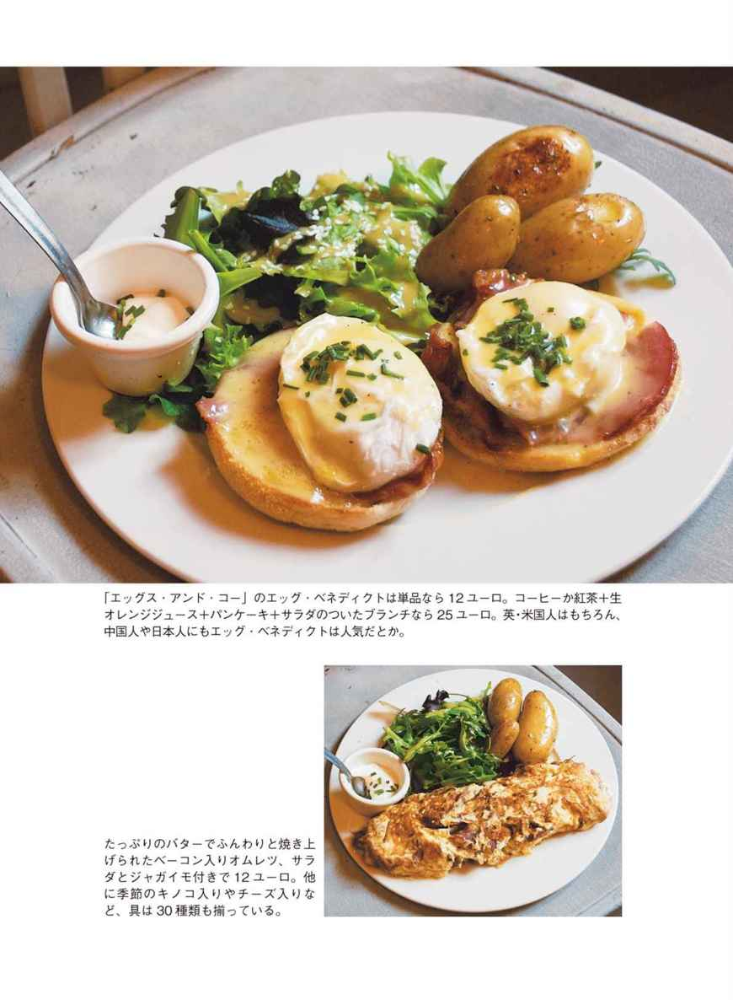
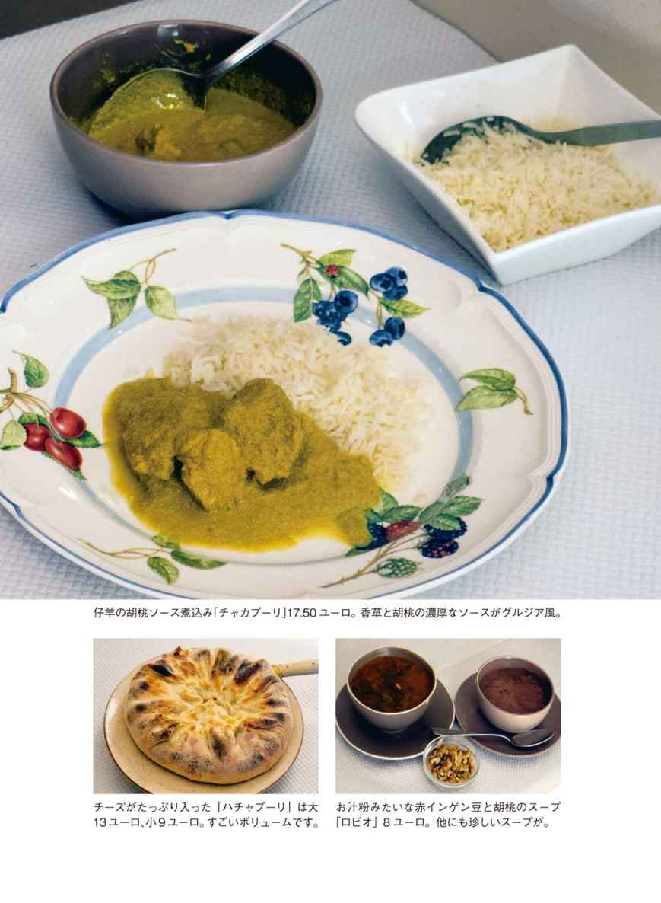
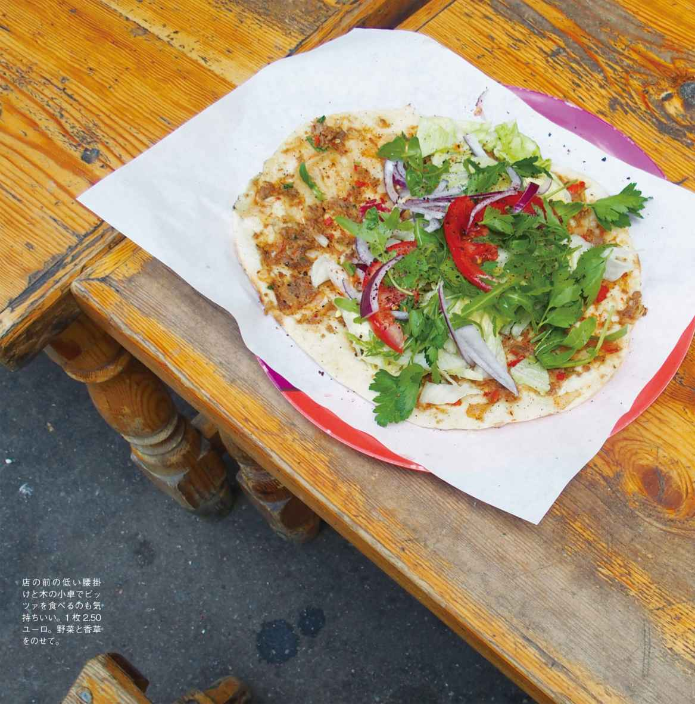
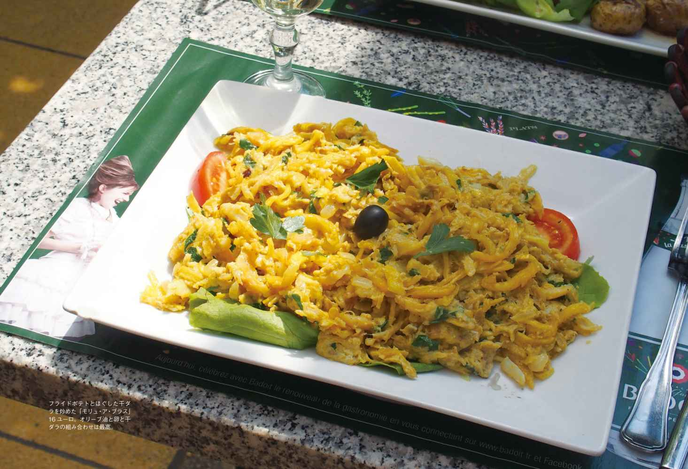
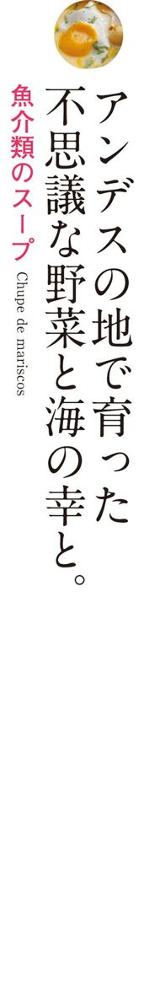
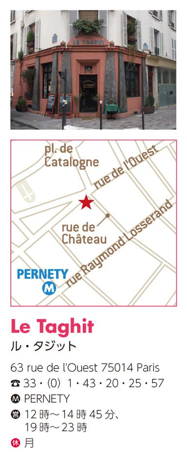
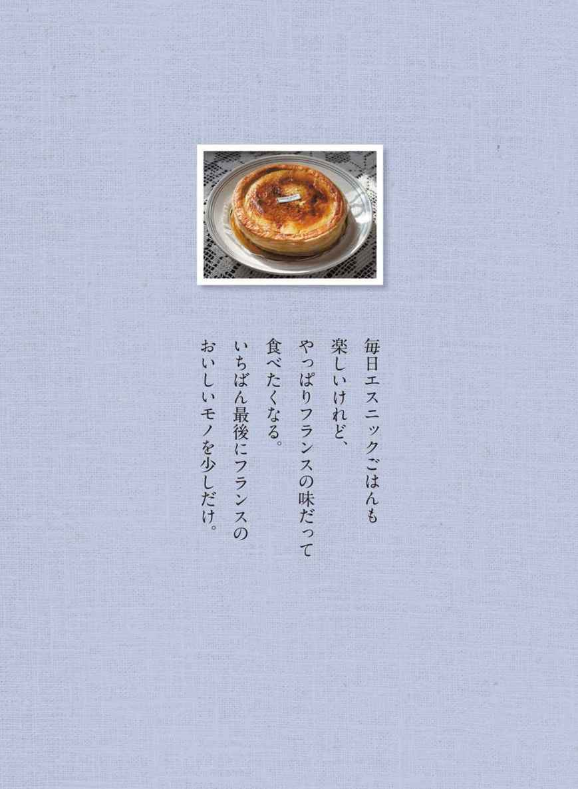

| パリ、異邦人たちの味（フィガロブックス） | |
| 稲葉 由紀子 | |
| (2016) | |
はじめに
隣町の青空市を冷やかしていたとき、ヒジャブ（ムスリム女性の頭布）姿の女性が小さな机にたった10個ほどのアレッポ石鹼を置いて座ってるのを見た。シリアから来た人だった。石鹼を買って「お国はたいへんですね」と声をかけることしかできなかった。
アレッポ石鹼はずいぶん前から使っている。
私と夫が毎週買い出しに行く近所のバニュー市場の露天の屋台で、蜂蜜や自然素材の日用品を並べているオッサンが、「肌にいいよ」と薦めてくれたものだ。たしかに肌の弱い夫は頭のてっぺんから足の先までこれで洗うようになって。市販のシャンプーも石鹼も使わなくなった。無香料で、使用後のツルツル感がとても気持ちいい。
アレッポ石鹼は、気がつくとかなり昔から自然食品店とか薬屋などで販売されていたらしく、フランスでは愛用者がけっこう多い。でもその石鹼の説明をちゃんと聞いたのは、５区にあるシリアのお菓子の店を取材したときだった。
この本でも紹介する「プティット・メルヴェイユ・ド・ダマス」は、バラの花弁で包んだ世にも美しいチョコレートを売る店で、店員のラシダさんはお菓子だけでなく、シリアの特産品の話を熱を込めて語ってくれた。工場の床いっぱいに石鹼生地を流し、男たちがそれに刻印を押して切っていくという製法のアレッポ石鹼は、千年以上の歴史を持つという。シルクロードや千夜一夜物語の世界が急に身近になった気がした。けれど、そのときすでにシリアの国内では内戦が始まり、店では菓子の仕入れがずいぶん困難になっているという話だった。
フランス（とくにパリ近郊）に住んでいると、つくづく「世界にはいろんな人がいるなー」という気分になる。肌の色もさまざまだし、電車の中でも聞いたことのない言葉が飛び交う。それでいてフランス語さえ（ヘタでも）いちおう喋っていれば、あまり外国人扱いはされない。この多様だけれどゆるーい環境に慣れると、単一言語で「ガイジン」の少ないことが当たり前な日本に帰るたびに、ちょっと違和感を持ってしまう。
メディアも、ヨーロッパ内だけでなくアフリカや中東で起こっている出来事に敏感だ。毎日のニュースで内戦や難民のことが常に話題になっているから、家を捨て、国を捨てて欧州まで流れてくる難民の受け入れにも総力で対応できるのだろう。ウチの近所の人たちだって、かつては難民だったり、難民ではなくても、欧州に来れば豊かな生活ができる、ひと旗揚げられると信じて移住してきた人だったりするのだ。フランスという国は基本的に、そういう外からやって来た人々がフランスの文化と暮らしに役に立ってくれる、とずっと信じてきたのだと思う。それが今後もそのまま続けられるのかどうか、というターニングポイントにさしかかっているのは事実だが、そんな「建前」を高く掲げて進んできたフランスが、私はとても気に入っている。
とくに食べものに関しては（とつぜん下世話な話になってスミマセン）、その建前がみごとに結果を出している、と思う。これほど多様な食材と料理がふつうに味わえる国って、他にはないだろう。いろいろな国の珍しい食べものが、お金のある物好きなグルメのためではなく、その味を現地と同じように懐かしく味わいたい人々のために存在している、というところがいい。だからたいてい値段が安いし、「オーブン○度で○分間火入れする」なんてことを威張ったりもしない。
この本で紹介するのは、そんな他所の国の食べものが気楽に味わえる店ばかりだ。ただし他所の国といっても、たとえばフランドルやバスク、それにレユニオンなど、現在はフランス国内となっていても異国のルーツを感じる食べものは、エスニックとしている。
フィガロジャポン誌でこの連載があったのは２０１２年末から２０１４年にかけて。それ以降もシリアの内戦はさらに混乱を増し、４００万人を超える人々が海路、陸路を経て国を離れた。店の棚からアレッポの石鹼もだんだん姿を消しつつある。
そして、この本の新たな取材でモンジュ通りを訪ねたとき、あの「プティット・メルヴェイユ・ド・ダマス」の店はなくなっていた。ラシダさんは「エジプトに菓子職人が避難して作る」と言っていたけれど、それも叶わなかったのか。本来は店がなくなったらガイドからは外すのだけれど、あの美しいバラのお菓子が存在したことをぜひ伝えたくて、この本では例外的にその記事をそのまま載せています。
というわけで、今回のガイドは「パリで食べられるエスニックの食べものとごはん」に集中しました。第１章は、すでにフィガロジャポンの連載で紹介した記事。２、３章はこの本のために新たに取材して書き下ろしたものです。ただ、連載時に紹介したフランスの食べものの記事も捨てがたいので、巻末に付録扱いで入れました。悪しからず。
稲葉由紀子
このところ目が離せない、パリ中国料理事情 ●キジとキノコの鍋
北の街から届いた、甘く香ばしい伝統焼き菓子 ●ヴァニラ味のゴーフル
レトロな缶に詰まった、バターの香りの洋風煎餅 ●ダンケルクのゴーフル
軽い昼食、ブランチにぴったりの英国風卵料理 ●エッグ・ベネディクト
ダマスクローズの花弁に包まれたショコラ ●シリアのバラのチョコレート
中国の奥地に伝わる麺料理で暑さをやり過ごす ●雲南の壺入り麺
バスク料理の最後にかならず出てくる名物菓子 ●ガトー・バスク
おいしいものと旅行が大好きな二人が太鼓判を押す、パリの街のエスニック・レストラン
ヴァニラの香る南インド洋の火山島レユニオン ●ソーセージのルガイユ
世界中に展開する南インドの菜食と粉の食文化 ●豆の粉のドーナッツ
医食同源の知恵がいまも活きるアフガン料理 ●仔羊とカブの煮込み
日本と遙かな中東とを結ぶ味の中継点チベット ●豆腐と野菜のカレー
グルジア風煮込みは胡桃とエストラゴンの香り ●仔羊の煮込み、胡桃ソース
ポーランド出身の母娘が二人で営む東欧食品店 ●パストラミのサンドイッチ
黒服に黒帽子の男たちが行き交うユダヤ人の街 ●３種のキャビアの盛り合わせ
イランの女たちが受け継ぐ伝統の米料理ポロウ ●レンズ豆と干しぶどう入りピラフ
路上に行列ができるクルドの焼き肉サンドの店 ●クルド風ピッツァ
主役はナポリから来た陽気なピッツァ職人たち ●ピッツァ・マルゲリータ
緑のテラスの陽射しが心地よいポルトガル食堂 ●干ダラの炒めもの
ハモン・セラーノとパエリアは夏休みの味がする ●パエリア・ロワイヤル
アンデスの地で育った不思議な野菜と海の幸と ●魚介類のスープ
星空の下の饗宴を思い出す砂漠のハーブの匂い ●３種の粒のクスクス
手をかけ、時間をかけて焼く田舎パンの味わい ●ル・パン・デザミ
男上位の高級ショコラ界に挑戦する可憐な乙女 ●ティフェーヌさんのショコラ
イカや豆の料理がじょうずな路地裏ビストロ ●小イカのソテとイカ墨ごはん
Libanais
フランスで暮らしていてふと気がついたら、お菓子を食べる量が日本にいたときよりもずいぶん増えていた。
基本的にフランス料理は砂糖を使わないから、その代わりにデザートで甘いものを摂る。子供も給食で毎回デザートを食べるクセがついているので、家にはいつも袋菓子が置いてあり、ちょっとお腹が空けば親もそれを口に入れるようになってしまった。
おいしいケーキやチョコレートをたまに食べる愉しみは捨てがたいけれど、安い駄菓子をつい口に入れてしまうのはもう止めよう。とは思ったものの、口寂しいときに食べる代替品がないと、煙草と同じでまた逆戻りしそう。そのときふと頭に浮かんだのが、あの干したナツメ椰子の実だ。
５年ほど前のこと。日本の地球研で乾燥地帯の食物栽培の研究をしているイシヤマくんが、サハラ砂漠でのフィールドワークの帰りに、ナツメ椰子の実をお土産に持って来てくれた。
英語では「デーツ」、フランス語では「ダット」と呼ばれるこの干しナツメ椰子の実は、アルジェリアやチュニジア、イラン、イスラエルなど北アフリカ・中近東の特産で、アラブ系移民の多いフランスでもふつうにスーパーなどの乾燥果物コーナーで売られている。ちょうど日本の干し柿と同じように、干し具合も値段もいろいろで、お茶請けにしたり、種を抜いてお菓子に使ったりする。糖分が高く、カルシウムやビタミンを豊富に含むので、昔は「命の実」と呼ばれて、砂漠を旅する人々には欠かせない食べものだった。
でもイシヤマくんの持って来たデーツは、近所の店で売られているものとはかなり違う、サハラ砂漠の辺境に生きる人々が自分たちのために作って食べているデーツで、市販はされていないという。ほどよい甘さでふっくらと柔らかく、私はひとりで箱を抱え込んで毎日食べ続けてしまったのだった。
おいしいデーツを探して。
その後、市場でもスーパーでもあのイシヤマくんのデーツの味を求めていろいろ試しているけれど、残念ながらそこまでおいしい品にはまだ出会えていない。
ただそうやって食べ比べているうちに、デーツはひと粒でも満足感があり、甘さが人工的でなく栄養的にも優れているので、空腹を紛らわせるには駄菓子よりずっといいと痛感したのだ。いまや我が家にはデーツの箱が常備されて、日ごと存在感を増している。
デーツの収穫の季節は晩秋。プロヴァンス地方では、クリスマスの伝統的な「13のデザート」のひとつにデーツが挙げられている。スーパーで売っているのは色黒で透明感の少ないチュニジア産が多く、値段も格安。反対に日本のアンポ柿風の柔らかい生干しデーツもあるけれど、私の好みは、枝についたまま深みのある琥珀色に干し上げられたものだ。
15区のエミール・ゾラ大通りにある「レ・デリス・ドリアン」は、レバノン直送の野菜やチーズ、お惣菜からアラブ菓子まで揃えた大きなオリエント食材の専門店。アリババの洞窟みたいに、天井から床まで各種の粉や豆、香料、干し果物、漬物などであふれ返った店内は一見の価値がある。デーツも産地や干し具合など各種あるので、好みに合わせて選べます。
Chinois
いまから30年ほど前、初めてパリに数カ月滞在したとき、おいしい中国レストランが見つからなくて、バカのひとつ覚えみたいにサンミシェルのシュウマイ屋さんに通ったのを覚えている。当時のパリでは、むしろベトナム料理のほうが層も厚くて程度が高かったはずだが、そういう知恵は働かず、ともかく日本の「洗練された」中国料理が恋しかった。
家族で定住するようになってからはさすがに本気でおいしい店を探し、餃子も飲茶も食べられるようになったけれど、パリの大多数の中国料理店は基本油っこい炒めもの中心で、安かろう不味かろう、だった気がする。
そうした状況に変化が見えてきたのは、たぶんここ数年のこと。それまでの何でもアリな「中国系アジア料理」ではない、四川だの温州だのという地方料理の看板をよく見かけるようになった。手打ち麺専門店や火鍋料理の店も出現、インテリアも明るくて小ぎれいな若者向けの店が増えてきて、パリの中国人社会ではいま世代交代が起きているのだと感じる。
その手の味に詳しいのは、だんぜん日本の友人たち（フランス人ってアジアの味オンチみたい）。なかでも頼りになるのがカメラマンのアユミさんで、彼女がこのところ足しげく通っているのは、近所の「ニラお焼きの店」だという。
薄味なのに深い味わいの、鍋にお焼きに蒸し団子。
「ニラお焼きって何だろう？」と興味津々、さっそく連れて行ってもらったのはモンマルトルの丘の西側、賑やかなルピック通りのすぐ隣の路地にある「イン・エ・ヤン（原味）」だった。
鮮やかな赤の外装に漢字の看板。中に入れば、手作りらしい箸袋やクッションの赤が愛らしくて、気持ちが和む。クコとナツメの実の入った熱い菊茶が供される。
常連のアユミさんがテキパキと注文してくれたのは「豚耳薄切りの冷製」に「トウモロコシの蒸し団子」、そして「ニラお焼き」だ。
コリコリと歯応えのいい豚耳はちょっとピリ辛味。豚肉とトウモロコシの蒸し団子には、搾菜やキクラゲがたくさん刻み込んである。目当てのお焼きは、パリッと油で焼き上げた皮にたっぷりとニラが詰まっていて、汁のにじむ熱々を酢醬油で頰ばる。お焼きというより餅？ 肉入りもあるが、これは断然ニラ入りがお薦めです。
店主のウォンさんが「冬場はこれ」と強気で言い張るので、メインにはアユミさんも初体験の「キジとキノコの鍋」をとってみた。コンロの上でグツグツと湯気を上げる土鍋には、芳香を漂わせるスープが。その中にジロルやシャントレルといった旬のキノコが浮かび、パクチョイや香菜もどっさり。クコやナツメが入っているせいか、汁にほのかな甘みがある。
「調味料は塩だけです」というウォンさんの言葉がちょっと信じがたいほどスープのうま味は複雑で、知らない間に汗ばむほど身体が温まっていた。ウォンさんは長年タオイズム（老荘思想）を学び、その哲学を取り入れて、自然を大切にした添加物のない料理を追求しているという。過去の油っぽい中華料理とは一線を画した、新感覚の中国料理なのだ。
そういえばフランス語の店名の「イン・エ・ヤン」は「陰陽」という意味だし、「原味」は「味の源」。味も含蓄も深いのです。
Flamand
もう少し行けばベルギー国境という北辺の街リールは、19世紀に織物産業が急速に発展し、商工業の中心地として栄えた過去を持つ。いまもフランドル地方の産業の中心地ではあるけれど、輝かしい繁栄の時代は過ぎ、以前訪れたときには気候のせいもあって寒々とした陰鬱な印象が強かった。
ＴＧＶの開通で、パリから１時間で行ける地方都市となったリールを再び訪れたのは２０１１年の初夏。街は再開発が進み、前よりも明るく近代的になっている。歴史的な建物を利用した美術館やブティックも数多く、なかでも郊外の町ルーベの、昔の市営プールを改造した「美術と産業美術館」がとても美しかった。
瀟洒なアールデコの建物に入ると、フジタやボナール、ロダンなどの作品が水際に並び、街を支えた織物産業の歴史の展示もある。時間をかけて鑑賞し、別棟のきれいなレストランで遅い昼食をとった。そのデザートに出たゴーフルがまた美術館の雰囲気にふさわしい優雅なものだったのだ。
ゴーフルというと日本では凮月堂系のお菓子で、薄焼き煎餅かウエハース状のものと思われている。でもフランスでは、もっと生地が厚く柔らかめで、型押しして焼いた菓子を指す。日本でベルギーワッフルと呼ばれているものも、だからフランスではゴーフル。
ところがルーベの美術館で食べたゴーフルは、薄焼き煎餅でもなくワッフルでもない、ちょうどその中間の厚さ硬さのしっとりした皮にヴァニラの香りのする濃厚なバタークリームをはさんだ、甘い甘いお菓子だった。え？ ちょっと甘過ぎるんじゃない、と思いつつもかじっていると、ひんやりシャリッと溶けるクリームの舌触りがあまりに快く、食べ終わってしまうのが惜しくなってくる。これって恋に落ちる感覚とそっくり。気がついたときには虜になってる。
リールで発見した味に、マレの裏道で再会。
そのゴーフルには「ＭＥＥＲＴ」という刻印が押してあって、美術館のレストランもたしか「メール」の運営となっていた。リールのお菓子店なんだろうなと思いながら、そのままパリに帰って数カ月。
ある日マレを歩いていたら、ピカソ美術館の横の路地に、忘れもしないあの「メール」の看板を掲げたブティックが新規開店しているではないか。すぐに飛び込んでゴーフルを買いました。
そこで知ったのは、この店がリールに18世紀以来続く老舗で、当時のままの壮麗な店舗にサロン・ド・テやレストランも併設した名店であること。そしてこのゴーフルは１８４９年に考案された銘菓で、今も当時のレシピのまま作られていること。リールの街をさんざん歩いたのに、本店に気がつかなかったのは残念だった。
でもパリでは、マレを通る機会さえあればゴーフルをおやつ用に買い込む。そのたびに、別れた恋人に巡り会ったみたいに幸せな気分になる。パリの店舗は小さいけれど、クラシックで上品なたたずまいがいかにもマレ的。
いまはピスタチオ味だのラムレーズンだのと、バリエーションも何種類か作られている。でもマダガスカル産のヴァニラが香るナチュラルタイプがやはりいちばん。真空パックなんか使わず、「賞味期限10日」ときっぱり言い切るところも、昔気質で気に入っている。
Flamand

前ページでリールのゴーフルの話をしたけれど、またそのフランドルの旅の続きです。
リール見物のあと、パリに戻る前にちょっと海を見たいよね、という話になって、一行４人は英仏海峡に面した港町ダンケルクに向かったのだった。
途中、ひとつ手前のベルクという田舎町で１泊。翌朝、駅でダンケルク行きの列車をボーッと待っていると、どこからともなくバターの焼けるいい匂いが漂ってくる。見ればホームの向かいにお菓子の看板を掲げた工場がある。そこでビスケットだかパイだかを焼いている様子。お土産になるかも、と入口まで行ってみたのだが、ショールームは無人で、匂いの元にはたどり着けなかった。その後ダンケルクの町で、その工場はゴーフル作りの老舗メーカーということを知ったけれど、やっぱり実物を味わう機会はなかったのだ。
だからパリに帰って、デパートＢＨＶの台所用品売り場に隣接するエピスリで、まさにそのゴーフルが並んでいたよ、と旅の仲間から知らされたときは嬉しかった。リールのゴーフルといい、遠い北の町の味に２度もパリで偶然出会うなんて、フランドルとは不思議な縁で結ばれているのかも？
パリのデパートで買える、フランドルの伝統菓子。
もちろんすぐに買いに行き、匂いだけで幻だったそのゴーフルが、やっと味をともなう存在になったのでした。めでたしめでたし。「ラ・ダンケルコワーズ」というのがその老舗の名前。１９０４年の創立で、以来昔のままのレシピを守ってゴーフルを作り続けているらしい。ゴーフルといってもリールのしっとり甘いクリーム入りとはまったく違い、カリカリパリパリと歯応えのいい、薄焼き煎餅タイプ。バターが22％も入っていて、口中に良質なバターの香りがふんわりと残る。ベルクの駅のホームがバター臭かったのもなるほど納得。ちなみに英語では「バターワッフル」という品名らしい。きび砂糖を使った自然な甘さも心地よく、つい何枚も食べ続けてしまうのが問題だけれど。
もうひとつ嬉しかったのは、ゴーフルの入っている金属の缶がなかなか可愛いこと。30センチ近くもある青い缶に描かれているのは、フランドルの民族衣装を着けた少女で、これは20世紀初めの北フランス国鉄のポスターの絵を写したものらしい。もう１種類、赤い缶のゴーフルもあって、こちらはラム酒風味。両方とも缶の上から下までぎっしり中身が詰まっていて重量なんと４００グラム。これは食べでがあります。いまどきの過剰包装、スカスカ紙箱のお菓子類に慣れている身には嬉しい驚きだ。
オペラ地区のデパートに比べて「庶民のデパート」感の強かったＢＨＶも、近年はファッションスペースを拡張し、男のモード別館も作ってがんばっている。４階が台所用品・食器売り場で、その隅にある塩味・甘味のエピスリコーナーが、小さいスペースなのになかなか充実。お土産によさそうなフランス各地の銘菓やオリーブ油、調味料などどれも魅力的で、ゴーフルを買いに行くついでにかならずチェックする。
食べ終わった空き缶は捨てるのがもったいなくて、我が家ではパスタの保存用に使っています。スパゲティの長さにちょうどぴったりの高さで、とても便利だよ。

Anglais
フランスの安い定食屋の前菜に「ウフ・マヨネーズ」という一品がある。学食とか、街道沿いの運転手向け食堂でも定番だった。
「だった」と過去形で言うのは、最近この手の安食堂の数が減っていて、未だに続いている店でもこの「ウフ・マヨ」はあまり登場しなくなっているからだが。
ゆで卵を輪切りにしてマヨネーズをかけた、料理ともいえないシンプルな前菜。パリの日本語新聞「オヴニー」の創始者ベルナールさんは、定食屋に入ると決まってこれをとっていた。「ウフ・マヨ」の愛好者は圧倒的に男、なのだ。
そういえば、カフェのカウンターに置いてあるゆで卵を、朝のコーヒーと一緒にかじっているのもオッサンたち。卵は男たちのエネルギーの素だったのかな？

オムレツとはまた違う、複雑な味わいの卵料理。
卵料理というとそんなシンプルな印象が強かったので、少し前に日本のテレビ番組で「エッグ・ベネディクト」なる英国料理を見たときにはちょっと興奮した。
え？ ポシェした卵を焼いたマフィンにのせる？ ベーコンものせて、さらにオランデーズソースをかける？ なにその手の込んだ食べ方。朝ごはんにそこまで手をかけるなんて、さすが英国。歳とともに卵好きが嵩じているところにその番組が火をつけて、「エッグ・ベネディクト」食べたい欲が抑えられなくなった。
そういえば数年前、サンジェルマンの裏の路地に珍しい卵料理専門店を見つけたっけ。ゆで卵から目玉焼き、オムレツなどなんでもあったけれど、もしや。
と思い立って出かけた店「エッグス・アンド・コー」で、みごと念願の「エッグ・ベネディクト」に出会えたのでした。ビンゴ！
間口は狭く、中はカウンターがあるだけの小さな店と思っていたけれど、階段を上るとイギリスの田舎風の、シンプルなのに可愛い工夫のある室内。ちょっと傾いてギシギシと鳴る床に、椅子とテーブルが何脚か置かれている。階下のカウンターでコーヒーを飲みながらお喋りする常連客の英語が絶え間なく聞こえて、気分はすっかり英仏海峡の彼方。
ちょうど昼どきだったので、まず「今日の野菜スープ」をとる。これはマヌケな英国的薄味ではなく、ちゃんとめりはりの利いたフランス味でなかなか美味。
そして、ほかほかの皮付きジャガイモとグリーンサラダを添えた「エッグ・ベネディクト」がやってきた。緑のシブレットを散らしたポーチドエッグにナイフを入れる。トロリと黄身が流れ出す。小鉢に添えられたクロテッドクリームもかけて、渾然一体となったのをマフィンごと口に運ぶ。ベーコンの脂が控えめに香る。なんという贅沢な味わい、至福の時。つけ合わせのサラダもジャガイモも、質のいい新鮮な材料が使われているので、スープとこのひと皿でかなり満足度の高い昼ごはんとなったのだった。
突然思い出したのだけれど、ソフィア・コッポラの映画『ＳＯＭＥＷＨＥＲＥ』で、エル・ファニングが父親のために作っていたのが「エッグ・ベネディクト」じゃなかったっけ？ ホテル、セレブ、美少女によく似合う料理だものね。
そして、カフェのカウンターのゆで卵は、フランスのうらぶれたオッサンによく似合うのです。
Syrien
このページを読もうとしているあなたに、まず質問。
あなたはバラの香りがするお菓子が好きですか？ それとも香水みたいな匂いのお菓子なんて食べる気しない？ 後者だと、今回の話、あまり楽しめないかも。
というわけで、バラ好きの方々だけに捧げるこのページ。でもじつは私も、バラのジャムだのバラの香りのマカロンだの、とくに嬉しがるタイプではなかった。夫をはじめオトコどもが「げげっ、なにこの化粧品臭い味！」と放り出すのを、もったいないから食べていたという程度で。
そもそものきっかけは、友人に「とても上品でおいしいシリアのお菓子の店がある」と聞いて、モンジュ広場近くの「プティット・メルヴェイユ・ド・ダマス」に寄ったのが始まり。
バラ水やカルダモンの香りがほのかに漂うヌガー生地。ピスタチオや松の実、干し果物をちりばめたショコラにフルーツゼリー。アラブ系のお菓子というと、揚げて蜂蜜に浸けたような激甘なものが多いのだけれど、この店のものは甘さも脂肪分も控えめで、いくつでも食べられそうだった。首都ダマスカスの菓子職人が手作りするという色鮮やかな干菓子の数々は、覚えきれないほどの種類があり、どれも洗練されていて、まさに千夜一夜の宴の食卓のよう。
なかでも美しく目を惹いたのが、バラの花弁に包まれたチョコレートやヌガーだった。
ダマスカスは古来バラの原産地で、香油の交易の中心でもあったらしい。濃い紅色のオールドローズの花弁でくるんだ、まるでバラそのもののような外観のショコラを「すごく匂いがきついのじゃないかな」と心配しつつ試食してみたのだが、これが意外にさっぱりしていて、花びらの感触とともに自然な香りが口中に広がる。昔大好きだったマンガ『ポーの一族』の主人公になった気分。これはロマン派乙女たちには大受けだろうなー。
バラに干し果物にナッツ、シリアの豊かな自然の味。
箱入りの、バラの花園みたいに華やかなショコラの詰め合わせを買って帰ったら、日本から来ていた女友達が嬌声を上げた。蓋を取ると、ピンクの花びらがほろほろと散る。チョコレートのビターな香りにバラの芳香が絡む。夕食に用意した魚のクスクスにぴったりの、素敵なデザートになった。
バラの花弁に包まれた菓子は、他にも飴固めのピスタチオやヌガー、ルクームなど何種類もある。花弁ならぬ金紙に包まれ、芯にバラのガナッシュとナッツを封じ込めた板状ショコラも繊細な味で、苦手なはずの夫も「これならおいしい」としぶしぶ認めたのだった。
夫は10数年前にシリアを旅行し、パルミュラの遺跡やアレッポを訪ねている。でもいま、そのシリアの国は内戦のさ中。
店を仕切るラシダさんによれば、ダマスカスの街中でも戦闘が続き、菓子職人たちは現在エジプトに避難して製造を再開しようとしているとか。菓子だけでなく、布や刺繡、石鹼などの伝統技術が内乱のため操業不可能になって中断し、失われつつあるという。ほんとうに深刻な状態なのです。
こんな美しいものを作ってきた人たちと国に、一刻も早く平和が訪れますように、と私たちはただ祈ることしかできないけれど。
Chinois (Yunnanais)
暑い日が続くとてきめんにお腹をこわす体質なので、夏の食生活には気を使う。フランスの食事は塩気の強い脂っこいものが多いし、上手に水分を補わないと喉がひどく渇いてしまったりする（そんなときは冷水ではなく、熱いお茶か白湯を！）。
それに７、８月はヴァカンスを取るレストランが多いので、外食も自然とフレンチではなくエスニック系が中心になってゆく。そんなときの強い味方が、前に紹介した「イン・エ・ヤン」のような新世代中国料理店だけれど、じつはもう１軒、「ここに行けば安心」なお店があるのです。
メトロのサンジョルジュ駅からノートルダム・ド・ロレット通りを少し下ったところにある「ル・ポン・ド・ユンナン」は、中国の南の端、雲南省の地方料理を食べさせてくれる店。雲南省は、地図を見たらベトナムやラオスと国境を接していて、山が連なり緑の深い、豊かな自然の地らしい。
すぐ北が四川省なので、この店の料理も基本的に四川風の辛いものが多い。いちど夫が注文した牛肉麺なんか涙が止まらないほどの激辛だったので、辛い味が得意な人でも油断はできない。メニューをよく見て、店の人と相談して決めましょう。でも竹筒に入った牛肉とキノコのピリ辛炒めなどは、ほどよい辛さで食べやすいし、担々麺風の挽き肉と胡麻たっぷりの麺も、スープがとにかく美味で辛さが心地よい。前菜の冷麺も夏向きのさっぱり味だ。
麺といえば、この店で使っている雲南の麺がおいしい。黄色い中華麺ではなく、白くてつるつるした、日本の細めのうどんみたいな麺で、喉越しがとてもいい。中国食材店でこれの乾麺を探してみたけれど見つからなかったから、現地直送なのだろう。
昼定食だと、麺にミニ餃子を添えたセットが何種類かあって10・50ユーロ。気軽に食べられて便利。
スープを入れた陶の壺は、いつまでも熱を保つ。
けれどこの店の看板料理といえば、何といっても雲南独特の「壺入り麺」。科挙の勉強に励む夫に、妻がはるばる川を渡って温かい麺を届けたという故事にちなんだもので、壺に入った薄味のスープに卓上でいろいろな具と麺を入れて食す。これはぜんぜん辛くない。
まずは、熱々のスープをたたえた深い壺が運ばれてくる。丼には茹でた麺。皿に並ぶのは、薄切りの牛肉、豚肉、白身魚、イカ、エビ、中華ハム。麺と具をすぐに壺に投入し、半煮えになったところで各自が椀にすくい、細ねぎや香菜などの薬味を添えて味わう。辛い料理を何品か食べた後にこの優しい麺を食べると、胃がすうっと落ち着く気がして、食事の〆にはかならず頼んでしまう一品だ。
他に、カニやキノコの特別季節料理も黒板にあるし、コワイもの好きには鴨舌とか毛血旺（固めた血と内臓の料理、辛い！）なんて不思議な料理も数々あるので、ふつうの中国料理店では味わえないディープな経験もできそう。
そして最後のデザートは、ぜったい胡麻入り団子がいい。黒胡麻あんの入ったほんのり甘い団子に、これまた雲南特産のプーアール茶を注いだもので、お茶の滋味が舌に沁み入り、とても豊かな食事をしたという印象が心に残る。
暑いときには、冷たい料理は避けて温かいものを。これ鉄則です。
Basque
「名物にうまいものなし」ということわざのあてはまる菓子が、日本だけでなくフランスにもいくつかあって、そのひとつがこのガトー・バスク。パイ状の皮がかなり乾いた感じで硬く、その中にずっしりと重いアーモンドクリームの餡が入っている。
この菓子があまりうまいものと思えない理由はたぶんふたつある。その１は、土産物屋や地方物産サロンの屋台などに「バスク名物」として並んでいるガトー・バスクがちっともおいしくないこと。旅の思い出に、と買って帰って味見をして、なーんだ、と失望させられたことが何度かある。
２番目の理由は、バスク料理レストランでこってりと味の濃い料理をお腹いっぱい食べてしまうと、デザートに出てくるガトー・バスクはたとえ味がよくても、ひと口で「もうカンベン」となってしまうから。このヘビーなデザートをさらに平らげるバスク人ってどんな大食漢なんだ？
というわけでいままでガトー・バスクは、私の中で「どうでもいいお菓子」に分類されていたのだが。
老舗のガトー・バスクは文句なくおいしかった。
メトロのサンプラシド駅からオ・ボン・マルシェに抜ける買物通りを歩いていたら、風に乗ってバターのいい香りが漂ってきた。
ちょうど夕方の小腹が空いたときだったので、あたりを見回すと、やけに派手なオレンジ色の日除けを掲げた菓子店がある。「また新しいショコラティエ？」と横目でにらんで通り過ぎようとしたら、ウインドウに並ぶガトー・バスクが目を惹いた。
それは見るからに上手に焼けたお菓子で、例の乾いた感じがなく、皮がつやつやと輝いている。触ればほろっと崩れそう。
基本のアーモンドクリーム入り、バスク名物の黒サクランボ入りの２種の他にチョコレート味のものもあって、ホールサイズだけでなく、ひと切れずつでも売ってくれたので、３種類をそれぞれ買って、家ですぐに味見した。
そしてそれは、いままで食べたどんなガトー・バスクよりもおいしかったのだ。予想した通り皮がさっくりと軽く、中のアーモンドクリームの味がとてもいい。自宅だから好きなだけ切って食べられるのもラク。
味を占めて度々買いに行くようになった。この店「パリエス」は、１８９５年にバイヨンヌのショコラティエとしてスタートした老舗で、いまはサン・ジャン・ド・リュッツに本店があり、バイヨンヌ、ビアリッツにも店舗を持つという。パリの店は２０１２年に開店したが、すでに評判が高いようで市内のバスクレストランやエピスリにも、ここのガトー・バスクを置くところが増えている。
アーモンド粉を使ったお菓子というと、マジパンをはじめフランスには数えきれないほど存在するが、大部分はあまり感心しない味で、夫などはアーモンド粉と聞いただけで顔をしかめる。でも「パリエス」の製品はスペイン南部産のマルコナ種のアーモンド粉を使った良質のもの。胡桃やオレンジ、ピスタチオなどで香りと彩りを添えた「トゥーロン」という伝統菓子も、恐る恐る試したら、初めて「マジパンっておいしい」と思えたのだった。
ガトー・バスクの餡の味がいいのも、だから当然なんですね。
Espagnol
フレンチのビストロやレストランで食事していると、日本人客の話し声が大きくてちょっと気になることがある。若い人の多い気楽な店ならいいのだけれど、シックな店だとフランスのお上品な人たちはかなりヒソヒソ声で喋っているので、日本語がイヤでも目立って聞こえてくる。人数が多くてお酒が入ると、飲み屋のノリになってしまうのかな？
私たち一家も、家族５人集合となるときはあまり気取った店には行かず、カジュアルな場所を選ぶようにしている。そんな場合に最適なのが、レピュブリック広場の南にあるスペイン酒場「エル・リンコン・エスパニョル」だ。
タンプル大通りに平行してバスチーユ広場まで続く細長い裏道のアムロ通りは、レストランやバーの点在するおいしそうな通りだけれど、「エル・リンコン・エスパニョル」のある北端あたりはまだ店の数も少なく、やや裏町感の漂うたたずまい。
でも一歩店に入ると、そこはとつぜん国境の南。生ハムが何本も窓辺に吊るされ、カウンターの向こうのパトロン（ご主人）も、動き回っている店員さんたちも、フランス語よりスペイン語のほうがどう見ても得意そう。並ぶタパス類もいまどきのしゃれた繊細なそれでなく、昔からバルでオッサンたちがつまむ実質的なおかずばかり。
海と山の幸に恵まれた、スペインの北の地方の味。
なかでも、行くとかならず最初に注文するのが「パドロンの青唐辛子」だ。フランス語の「パトロン」に似ているので、「パドロン」はスペイン語で「ご主人」の意味だろうと勘違いして、長いあいだこれは「オーナーお薦めの唐辛子」だと思い込んでいたのだが。ネットで調べたら、これはガリシア地方パドロン特産の青唐辛子のことなのだった。
シシトウガラシとピーマンのちょうど中間くらいの大きさで、皮の薄い、きれいな緑色の唐辛子をさっと素揚げにし、塩を振っただけの簡単な一皿だけれど、皿に山盛りになっているので、これをみなでつまみながらまずリオハの赤を傾ける。それからゆっくりとメニューを見て、イワシやイカ、チョリソなどを頼み、最後はパエリアで締めるのが、いつものコース。青唐辛子はときどきひどく辛いのも混じっているけれど、さっぱり味で柔らかく、野の香りがしていくらでも食べられる。それにずいぶん量があって、５人で食べてもなかなか減らないのだ。
ガリシア地方はイベリア半島の北西部で、大西洋に面していて雨量の多い、気候的にはポルトガルに近い土地。漁業も盛んだから、イカやタコなどフランス料理ではあまり多用しない食材をおいしく食べる工夫がある。
だからこの店でもう一品かならず頼むのが「タコのガリシア風」。ぶつ切りのタコをオリーブ油で炒めてパプリカを振ったもので、茹でジャガイモが添えられている。柔らかいタコとジャガイモ、そしてオリーブ油とパプリカの香りがみごとに調和して、タコ料理のなかでこれに勝るものはちょっとない、と思ってしまう。
大きな平鍋のパエリアも本格的だし、イカ墨ファンなら、やはり平鍋で供される「イカ墨ごはん」をぜひ。鍋のまわりで少しくらい歓声を上げても、不愉快な顔をされる心配はなさそうです。
Ethiopien
ウチの娘の高校時代からの親友エロディは、パートナーがコモロ出身で一緒にいろんな国を旅行しているせいか、エスニック料理の店にやたら詳しい。彼女のおかげでインドごはんとかベトナムごはんとか、「ガイド本には出ていないけど安くてウマイ店」で食事する機会がグンと増えた。
なかでも、最近教えられてすっかり気に入ってしまったのが、９区にあるエチオピア料理店の「アディス・アベバ」。
エチオピアって、東京オリンピックのマラソン優勝者アベベとか（古い！）、ラスタ運動の約束の地、くらいの知識しかなくて、食べもののイメージもまったくゼロだった。けれど、クスクスなど北アフリカ系の料理とも違うし、マフェなどのサハラ以南アフリカ系料理とも違う、どちらかといえばインド風の匂いのするさまざまな食材が50センチくらいもある大皿いっぱいに並ぶところは、ちょっと他にはない迫力。初めて見たら誰でも歓声を上げてしまうと思う。
右手の３本の指を使って、食べものを口に運ぶ。
ともかく、この店ではほとんどの客がその大皿料理「ベヤイネトウ」を注文する。エチオピアのさまざまな伝統の味を盛り合わせた一品で、私たちは３人で２人前を頼んだのだが、「３人分来ちゃったの？」と焦るほどの量だ。「ベヤイネトウ」を人数より１人分少なく注文し、その代わり「牛肉のタルタル」を１人前加えてもらうのが重要なポイント。だからこのレストランには、何人かで連れ立って出かけるほうがいい。
大皿に並ぶのは鶏肉、牛挽き肉、ゆで卵、カッテージチーズ、そしていろいろな野菜をそれぞれ違う味つけで料理したもの。中央には「牛肉のタルタル」が主役みたいに小さい壺に入っている。それらをエチオピア独特の「インジェラ」というクレープに包んで食べるのだ。この店ではナイフ＆フォークは出ず、手でちぎったクレープでおかずをすくって食べるインド方式なので、食事の前にはかならず手を洗いましょうね。
かなりピリ辛味があるかと思うと甘酸っぱい煮ものがあったり、さっぱりサラダがあったりと、味の違いが楽しく、でも全体にあまり濃くなくて親しみやすい味つけなので飽きることがない。なかでも生の牛挽き肉「タルタル」が素晴らしい。フレンチのタルタルとはまったく違う、エチオピアでしか採れない香料とバターを混ぜ込んだこれは、食べた人が全員「おいしい！」と感激する味だ。
お腹いっぱい食べた後は、エチオピアコーヒー。生の豆を煎り、砕いて、首の長い黒い焼きもののポットに入れて直接温める。香が焚かれ、儀式めいた雰囲気のなかを小簞笥にのせてしずしずと運ばれてきたコーヒーは、茶碗のようなカップに注がれる。濃くて香り高い、極上の飲みもの。
テーブル掛けやカーテンの布にきれいな赤や緑、茶の刺繡があるので、ご主人のセラブズさんに訊いたら、それはエチオピア正教の十字架を象っているという。そういえばクリスマスの番組で、巨岩を掘り下げて作ったエチオピアの岩窟教会の映像を見た覚えがある。
大昔からの伝統を保ち続けるこの国は、宗教にも人にも料理にもどこか高雅で穏やかな印象があって、それはアフリカ大陸の他のどの国とも違うのだった。
生まれも育ちもパリ郊外のエロディと、西インド洋コモロ諸島出身のリアズ。
ぜんぜん違う環境で育った二人がパリの大学で知り合い、
意気投合し、カップルとして暮らし、旅を重ねた。
10年を経て二人は正式に夫婦となり、初めての子供の誕生を待っている。
フランスでは、それはどこにでもあるふつうの物語。
エロディ・マエニュレンは、娘の里子の高校時代からの親友だ。エロディと里子のことを書いていると、それは家族で引っ越して来たフランスでの私たちの歴史と重なって、懐かしい想いでいっぱいになる。
二人の通ったサント・マリー校は小中高一貫のカトリック系私立学校で、まったく無宗教の私たちが娘を入れたのは、日本から来てフランス語の喋れない子供を学校側が快く引き受けると言ってくれたからだ。いっぽうエロディは、母親が私立の教師で、サント・マリーでは教師の子供は授業料が免除になるという経済的理由があった。お金持ちだらけの私立で、城も馬も持っていないふつうの金銭感覚を持った二人がたまたま同じクラスになって、スケートの話で意気投合し、高校の３年間を一緒に過ごすことになったのだ。真面目な二人は、ＢＡＣ（高校卒業資格）も問題なく取得。そこから進路は別々に分かれたが、交際は途切れず続いた。
大学の薬学部に進んだエロディは、そこでコモロから来たリアズに出会ったのだった。
私も含め、大多数の日本人にとって「コモロ」という地名はあまりなじみがないと思う（親父ギャグの得意な夫なら「小諸」っていうぞ、きっと）。だいたい日本の地図って西インド洋のあたりが割愛されていることが多いし、聞き覚えのある地名も「セイシェル」「マダガスカル」くらいなのでは？ コモロ諸島は、そのマダガスカル島北端とアフリカの東海岸にはさまれたモザンビーク海峡に散らばる島々で、19世紀から20世紀にかけてはフランスの統治下にあった。リアズのお祖父さんはインドからコモロに来た移民で、第二次世界大戦でフランス軍に加わって参戦し、その功績でフランス国籍を取得した。というのだが、じつは軍隊に入ってすぐに戦争が終結したので、じっさいの戦闘には一度も参加しないですんだらしい。戦後、彼はコモロで雑貨店を開いて成功。だからリアズはコモロでもインドコミュニティに属する富裕層の家庭で育った。
コモロはその後、１９７５年に独立して「コモロ連合」となる。
共にたくさんの国を訪ね、味わってきた二人。
リアズは１９９８年にフランスに留学、高校と大学を終えた。薬学部というのは、医学部に次いで資格取得に時間のかかる専攻で、早く就職して自立した里子と違ってエロディは、４年間の研修時代も含め、つい最近まで学生だったような印象がある。その長い長い大学生活のあいだにエロディとリアズは知り合い、一緒に暮らすようになった。
エロディは、お祖父ちゃんがずっと住んでいたパリ東南の、風車しかない小さな村ガタンに幼いころからよく行き、成長してからも友達を誘って週末や年末年始の休みをそこで過ごした。我が家に遊びにくる里子の高校時代の仲間に、だんだんとエロディの大学の友達も混じり始め、そのなかにいるリアズに気づいたのはいつだったろうか。夏の終わりに行うウチの庭の葡萄の収穫のとき、浅黒く精悍な横顔と、フランスの男の子たちとはちょっと違う穏やかな喋り方に、「あ、これがエロディの彼か」と思ったのを覚えている。
エロディたちはよく一緒に旅をしていた。行く先はトルコ、インド、スリランカ、ベトナム、インドネシア、そしてもちろんコモロ。日本の私の実家にもエロディは泊まりに来た。そんな旅のあいだに、彼らの味覚がどんどん発達し、研ぎすまされたのだろうか。学校生活の最後に二人が敢行した２カ月間のインド旅行は、なかでも印象的だったようだ。リアズの母親はもともと料理上手で、コモロからフランスに遊びに来るとインド料理やフランス料理を作ってくれたという。そのころから娘が「エロディに教えてもらったレストランなの」と言って私たちを食事に誘うことが増えてきた。そこはかならず安くて実質的で味がよく、しかも流行のガイド本なんかに載っていない店なのだった。
親たちの住む郊外の町アントニーから、パリ14区の下町のアパートに越して７年。そのあいだに二人は晴れて資格を取り、交際10年目にエロディの田舎ガタンの市役所で結婚式を挙げた。インドコミュニティの親戚も呼んで、フランス風とインド風の入り混じった賑やかなパーティーは、近所の農場を借りて行われた。天井は当の二人がインドまで出かけて買ってきた紗の生地で覆われ、引き出物はスパイスを詰めた袋、エロディのお色直しは紅いサリー。ご馳走はインドカレーとブリチーズ、ワインにマサラティー。ボリウッド映画みたいに派手ではないが、すべて手作りの楽しい披露宴だったという。

異邦人の街パリに暮らす二人が通い続ける店。
そしてエロディはいまフランス血液銀行の輸血管理の仕事に就き、いっぽうリアズは一昨年末、モンマルトルの丘のふもとに念願の薬局を開業した。それに従って二人の住居も14区から18区へ、パリの中でも人種のるつぼのような北の街区へと移っている。彼らの店の隣には家族経営の古いポーランド料理店があって、週末は伝統音楽の演奏で大騒ぎになるし、丘を登ればアフガニスタンのレストランが、ポワソニエ通りにはアフリカ食品店が軒を連ねている。それに加えて、丘をゾロゾロと歩きまわる世界各国からの観光客の群れ。この喧噪の巷では、誰がフランス人で誰が異邦人か、国籍はどこで民族は何か、誰もそんなことは気にならなくなる。
エロディとリアズに教えてもらった異国のレストランで、初めて出会った不思議な食べものを味わっていると、パリのこの混沌、この「どうでもいい感じ」がたまらなく心地いいと感じてしまう。人間、どこにいてもおいしいものを作り、おいしく食べている。そこからいつも出発したい、と思うのだ。
そんな二人がこれまでに行ったパリのエスニック料理店のなかで、ここはおいしくて何度でも通いたい、通い続けている、という店を教えてもらった。第１章に紹介しているエチオピア・レストラン「アディス・アベバ」も、彼らが教えてくれた店だ。
北駅裏のインド人街、14区のダゲール通り、13区の中華街など。異邦人が暮らすパリという街の日常が知りたかったら、どうぞ気軽に出かけてみてください。
Réunionnais
ダゲール通りを久しぶりに訪れたら、エロディとリアズの表情がふっと優しくなった。
「あ、ここのお惣菜屋は店の前に軽食用のテーブルを出したのね」
「この通路から中庭に抜けて、イルミネーションの輝くカフェを見つけたとき、興奮したわ。この通りでいちばん美しい場所と思った」
「日曜日のお昼に、この通りでブランチを食べるのが楽しみだったの」
その至福のブランチを食べさせる店に連れて行ってもらう。ダゲール通りのかなり端にあるレユニオン料理店「イル・ド・ラ・レユニオン」だ。
西インド洋の西端、もう少しでアフリカ大陸に引っかかりそうな位置にある大きな島がマダガスカル島で、その右側にポツンポツンと散らばる砂粒みたいな島々がモーリシャスとレユニオン。ふたつとも無人島だったのが大航海時代に発見され、そのうちのレユニオン島はフランスの植民地となった。いまでもこの島はフランスの海外県のひとつ。
サトウキビとコーヒーのプランテーションにアフリカから大量の奴隷が連行され、労働者としてインド系の移住者も増えて、いまはその人口の60％以上がクレオールと呼ばれる混血の人々となっている。レユニオンだけでなく、カリブ海のアンティーユ諸島や南米ギアナも含めたクレオールの文化は、だからフランスが海外に進出し、力で植民地を獲得した時代の名残りなのだ。白状すると、これらクレオール系料理にも違いがあることが分からず、ずっとごちゃ混ぜにしていた。パリにはアンティーユの食品店や料理店が多いので、レユニオン料理も似たようなもの、という認識しかなかったのだ。
でも、「イル・ド・ラ・レユニオン」で出た料理の数々は、マルシェのお惣菜屋さんのアンティーユ料理とはぜんぜん違うものだった。
薬味を変えて、洗練された味と香りを楽しむ。
二人のとった日曜のブランチは、飲み放題のコーヒーか紅茶、フルーツジュース、ジャムつきパンまたはポーチドエッグとパン。そのあとレユニオン風盛り合わせのプレートが出て、最後にデザートの盛り合わせ。覚悟していないと食べきれないボリュームだ。メインのプレートは「ブション」というクレオール風蒸し餃子、サモサ、揚げソーセージ、干ダラの揚げもの、鶏のカレーとお米で、いろいろ試したい向きにはぴったりかもしれない。デザートは３種のケーキにトロピカルフルーツの小鉢。
私はリアズに相談して、典型的なレユニオン料理をアラカルトでとってみた。
前菜には、カニの甲羅にほぐし身を詰めた「ファルシ」。そして島のソーセージを独特のソース「ルガイユ」で煮込んだ主菜。「ルガイユ」というのはトマトを使ったソースの総称らしく、生のトマトや玉ねぎ、香草を細かく刻んで混ぜた薬味もルガイユだし、肉や魚をトマトソースで煮込む料理もルガイユという。これがすてきだった。香料の利いたソースの中にソーセージのぶつ切りがゴロゴロ。それを米と共に食べる。別の器に赤インゲン豆を煮込んだソースも添えてある。また薬味として生トマトのルガイユ、ナスのルガイユ、レモンと生姜のコンフィもあって、これらを少しずつ加え、味の変化を楽しみながら食べる。薬味のルガイユはピリッと辛く、コンフィを混ぜれば爽やかな酸味が広がる。
「カリ（カレー）」も名物なのだが、インドとはずいぶん違い、ターメリックの黄色が勝った優しい味。魚やエビにはココナツミルクも入ってさらにソフトだ。ただし辛いほうがよければアシャールという薬味セットが出ているから、これも好きなだけ加える。
フランス人は朝寝のあと、午後いっぱいかけてゆっくりブランチを楽しむんだろうな。過去の植民地の夢の名残りを、侵略者の子孫たちも侵略された人たちの子孫も、こうして平和に味わっているダゲールの日曜の午後だった。
Pakistanais

パリのインド料理はロンドンより洗練されていない、と長いこと思い込んでいた。というのも、インド料理ならパッサージュ・ブラディ（ブラディ横丁）、というのが通説で、そこで食べたカレーはあまりおいしいと言えなかったからだ。
もともとフランスが植民地にしていたのは、インド南部のポンディシェリという都市。イギリスに多いカシミールなど北インド系の人々と違って、昔からフランスにいるインド人はふっくらと丸顔のぽっちゃりタイプが多い（ような気がする）。同じインドといっても、北と南では宗教も文化も食べるものも異なる、ということをはっきり理解したのは最近のこと。リアズにその両方のレストランを教えてもらってからだ。
インド北方には16世紀から19世紀まで続いたイスラム系のムガル帝国があり、一時はインド南端を除く全土といまのパキスタンまでをも含む広大な領土を誇った。だからインド北部とパキスタンの料理は同じルーツを持っていて、とても似ている。
パリでもっとも異国人の店が集まっている道のひとつ、10区のフォブール・サンドニ通りにあるパキスタン料理店「シザン」は、リアズとエロディが「北インド系の味ならここ」と保証してくれた店だ。
安サラリーマン風の青年や失業者らしいヒマそうな男たち、肌の色も年齢もさまざまな人が行き交うこの通りには、間口の狭い古ぼけた店が軒を連ね、シャッターが下りたままの入口も多い。そんななかに溶け込んで、気をつけていないと見逃しそうな店構えだけれど、よく見ると人の出入りがやたら激しく、混んでいるのがその「シザン」だ。
軽食の値段で極上のカレー。
店内も、何のしゃれっ気もない場末の安食堂風で、空いている席に座るとさっそくメニューを持って注文を取りにきてくれる。ゆっくり時間をかけるフランス式サービスとは大違いだ。そして、ほとんどの料理が６ユーロという軽食並みの値段なのにもびっくり。
エロディたちの結婚式にはこの店の「仔羊のコルマ」が供されたというので、まずはそれを頼む。「焼き立てのナンを食べなきゃ！」とリアズのアドバイスがある。そして隣の席の二人連れの女性が食べているエビカレーが見るからにおいしそうだったので、それも注文。ヨーグルトの飲みもの「ラッシー」は日本だとたいてい甘くされるけれど、私はぜったいナチュラル派。甘いとせっかくの料理の味が変わる気がする。さっぱり味のキュウリの前菜「ライタ」は、クミンシードのいい香り。
そして「コルマ」とは煮込んだカレーを指すらしく、ヨーグルトや木の実のペーストなどで羊を柔らかく煮込んだ、あまり辛くない黄色いカレーだった。そこにナンも運ばれてきた。熱々でカリッと焼けたナンは、ぜんぜん油分が使われていなくてひたすら軽く香ばしく、こってりした羊肉カレーによく合う。「エビのマサラ」は、香辛料の利いた辛い赤いカレー。かなり辛いのだけれど塩気はあまり強くないので、白米と混ぜてもナンと一緒でもおいしく、ソースに含まれる香辛料の微妙な味わいの違いが感じられる。
「カレー」って一口に言っていたけれど、「コルマ」と「マサラ」の違いがようやく分かってきたところ。どうもこれは先が長そうだなー。
Indien
フォブール・サンドニ通りを北に向かって歩いてゆくと、どんどんインド色が濃くなって、北駅の横を過ぎメトロのラ・シャペル駅にいたる数百メートルは、まったくインドのどこかの町としか思えない様相になってくる。
このあたりには南インドやスリランカから来たタミール人たちが多いのだという。そういえば昔、秋の初めにこの地区あげてのガネーシャ（象の頭をしたヒンドゥーの神様）のお祭りを見たことがある。フランスだけでなく、ヨーロッパ中からヒンドゥーの信徒たちが集まって、それはそれは盛大で異国情緒溢れるものだった。
道にはインド料理のレストランが何軒も並んでいるけれど、多過ぎてどれがいいのか見当がつかないし、何を選んだらいいのかも分からない、と思っていたら、リアズとエロディが北駅のすぐ脇にある「サラヴァナ・バヴァン」を教えてくれた。
「シザン」のような下町っぽい店を想像していたが、ここはけっこう有名店らしく、昼前だというのに客が列を作っている。満席の店内を店員さんたちが走りまわる。フランス語はあまり聞こえず、外国語が飛び交ってウワーンと天井に響いている。
ビックリしてちょっと怯えたけれど、意外に早く席に着けて、てきぱきと注文を取ってもらえた。ここは豆や穀物の粉を使ったクレープや蒸しパンなどが名物、というリアズの話なので、「ヴァダ」という豆の粉の揚げものと「ドザ」というクレープを前菜にとってみる。ドザは基本的には夜にしか出さないらしい。メインにはカレーを２種とナン。
ヴァダは、甘くないけれど見かけも味もまったくドーナッツ。これにサラサラのカレーソースの小鉢とチャツネ２種が添えてある。緑のコリアンダーと白いホースラディッシュのチャツネはかなり辛い。ドザは米の粉と豆の粉を使った薄いクレープで、フランスのそれよりずっと大きく、カレー味のジャガイモを入れて巻いてある。やはりカレーとチャツネをつけて食べる。両方とも前菜といってもかなりのボリュームで、ふつうはこれを軽食にするんだろうな。ナンとはまた違った魅力的な粉の文化。イドリという蒸しパンだのパロッタという平パンも気になったが、残念ながらそれは次回にしよう。
菜食主義者が愛する南インドのカレー。
南インドのヴェジタリアン料理は、全体に北のものよりもサラッとしていて、ちょっと塩けが強め。メインの、キノコがゴロゴロ入った「グリーンピースのカレー」がとてもおいしかったけれど、完食するのがやっとで、二人のお薦めのデザートにはたどり着けなかったのだった。いろいろ選ぶのに迷ってしまうヒトは、６～８種類の野菜カレー（ソースもそれぞれ異なる）にお米かパンとデザートのついた「南インドごはんセット」13ユーロ、をとるといい。
この「サラヴァナ・バヴァン」はパンジャブに拠点を持つチェーン店で、インド国内はもちろん、世界中に１４０の支店を持つという。世界各地からのインド系旅行者がここに集まるみたいで、それだけ信用のある店、ということなんでしょうね。
窓の外には観光バスが止まり、団体客が次から次へと通り過ぎてゆく。南アジアの町に滞在したつもりになって、ミニ異国体験のできる北駅の周辺です。
Afghan
リアズの薬局は、モンマルトルの丘の観光客でいっぱいの地区と、さまざまな肌の色をした住民の住む下の街区とにはさまれた中間地帯にあって、丘の上まで行こうとすると、どの道を通っても最後に急な階段か坂道をふうふう言いながら登るはめになる。
そんな坂道のひとつポール・アルベール通りの、もう少しでサクレクール寺院、というところに軒の低い緑色のレストランがある。平日の昼間は閉まっているので、その店に気がつくのは軒下で雨宿りする観光客ぐらいかもしれない。観光レストランが軒を連ねるお定まりのコースからはちょっと外れているし、だいたいパリの名所を観にきてアフガニスタンのレストランに入るという人も少ないかも。
アフガン料理といえば私は５区の「クーチ」で初めて食べ、それから何度も通うようになっていた。エロディたちのお薦めの「アフガニ」は、「クーチ」よりも美味だろうか？
ちょっと期待しながらモンマルトルの丘に向かったのだった。
不思議な弦楽器や太鼓、民族衣装の飾られた店内は、学生街にある庶民的な「クーチ」よりやや大人っぽい。メニューには見覚えのある料理名がいくつか。「アシャック」というのはなかに長ねぎを入れたまるで餃子そっくりな蒸しものだし、「ドゥール」というのはインドの「ライタ」と「ラッシー」の中間のようなヨーグルトの飲みものだ。中国の西、パキスタンの北、イランの東に位置するアフガニスタンは、東西南北の味が混ざってとてもおもしろい食文化になっているみたい。
穀物や香草を正しく組み合わせた料理の数々。
ミントの粉を振った爽やかな塩味のドゥールを飲んでいると、前菜の「ボラニ」が運ばれてきた。一見トマトのピュレみたいに見えるけれど、これは揚げナスを叩いてヨーグルトをかけたもの。濃いめのピリ辛味でちょっと味噌のような風味もあり、ナンにのせて食べる。そしてこの店のアシャックは、ヨーグルトをのせ、粗く叩いた羊肉と赤エンドウ豆のソースをかけてある。もっともエロディは、肉のソースをつけずミント味のヨーグルトだけで食べる「ヴェジタリアン風アシャック」がお気に入りらしい。
いっぽうリアズは、仔羊とカブを柔らかく煮込んだ「サルガム・チャロウ」が好物だとか。そしてこの仔羊の煮込みこそ、アフガン料理の真骨頂では、と思える豊かで不思議な味だった。ターメリックの黄色はカレーを思わせるが、食べてみると甘い。そして同時にかなり辛い。砕いた胡桃が入っていて生姜の香りもする。それらの味、香りがまた見事に調和して、カレーとはまったく異なるおいしさになっている。
得意そうな顔のご主人に訊いてみると、やはりアフガニスタンでは身体によい食材とその組み合わせが、常に料理の基本にあるとか。ゴルという黄色の砂糖、茶色の米、干しぶどうやナッツ、蜂蜜......。デザートに出た「ハルワ」もまさにその通りで、煎った小麦粉を練って蜂蜜で甘みをつけ、干しぶどうやアーモンドのスライスを混ぜたもの。甘みや香ばしさが舌に優しく、ホッとする味だ。
健康を考え手のかかった料理を作る、というアフガニスタンの文化のルーツはどこにあるのか。ペルシアかモンゴルか、いやもっと古くはギリシア、メソポタミア、などと考えていると、また地図を眺めてボーッとしてしまう。食べものからも世界は見えてくるのだ。
Grec
ギリシア料理と聞くとみんな「ウヘー」という顔になってしまうのは、多くの人がサンミシェルの路地にひしめくギリシア系レストランでひどい料理を食べた経験があるからで、サンミシェルに限らず、盛り場にあるギリシア料理の店は「安かろうまずかろう」が多い。エロディにギリシア料理店と聞いて、私も「ウヘー」と思ったけれど、「この店はそんなんじゃない」と反論された。
たしかに、ダゲール通りにあるその「ロディッセ」は、海の色に塗られたファサードも涼しげで品がある。ほの暗い店内に目が慣れると、壁に描かれた古典的な女性像（とうぜん「オデュッセイア」のペネロペだ）や楽器がとてもシックだ。そう思ったら髭面のご主人もどこか哲人風で。
前菜には「夏野菜の揚げもの」を二人でひとつとってみる。これは大正解で、大皿いっぱいに並んだ薄切り野菜の量がすごい。ズッキーニにキノコ、ピーマン、ナス。いい香りのする揚げ野菜に、添えられた白いピュレをつけて食べる。ニンニクとパンの身とオリーブオイルを合わせたピュレがまた野菜によく合う。フランスでもイタリアでも、揚げものが出ると「ああ、塩で食べるより天つゆが欲しいな」といつも思ってしまうのだが、このニンニクピュレは天つゆにも勝るというおいしさで、いくらでも食べられる。
と思ったものの、揚げもの＋こってりしたピュレはけっこうお腹にこたえて、じつは次のメイン料理が苦しくなってしまった。でもメインの、ミントの香りがさっぱりした肉団子「ケフタ」も、挽き肉に野菜をたくさん混ぜた「ムサカ」も、それぞれソフトな味わいで食べやすかったので、結果は○。
満腹でも無理して食べたいギリシアヨーグルト。
この段階で同行の夫はギブアップとなったが、私はエロディが「ぜひ」と薦めていたヨーグルトを意地でも食べたい、と思ってしまった。
デザートは、メインを終えてまだちょっともの足りない、くらいで食べるのがベストで、満腹で無理して食べるものじゃないのだが。満腹状態で食べたはずのこのギリシアヨーグルト、一さじ口に入れたとたんに満腹を忘れた！ ふつうのヨーグルトとは比べものにならないほど濃い、ねっとりと密度のあるヨーグルトに、黄金色をした蜂蜜がかかっている。重そうにみえて、口に入れると柔らかに溶けて消える。クリームよりもしつこくなく、甘さに雑味がない。どんなチーズケーキを食べるよりおいしい。
香ばしいギリシアコーヒーを飲みながら、女主人のカトリーヌさんに話を聞いた。ギリシアヨーグルトは、ふつうのヨーグルトを布で包んで水を切って作るという。だからあの濃さになるのだね。28年前から営業しているというこの「ロディッセ」、長年のファンも多く、金・土の夜はギリシア音楽の演奏も入ってひときわ賑やかになるらしい。静かに食事をしたいヒトは、もちろんウィークデイに。
ヒゲのご主人クリストスさんはあと２年で退職だという。２０１７年末には閉店してしまうそうだから、どうぞいまのうちに食べに行ってください。
Vietnamien
母が高齢なのでこのところ日本に滞在する時間が増えて、おいしい豆腐だのウドだのタケノコだのを思いきり味わえる。それは嬉しいのだが、身勝手なもので、パリでふだん食べ慣れていたモノたちが急に恋しくなる。それも主に軽食。
だって高級料理はパリにいても毎日食べはしないけれど、クスクスや中国料理は買物や映画のついでにいつも食べている。なかでもベトナムの麺「フォー」は、栄養バランスよくおいしくて安いので、ラーメン並みに親しい外食になっている。日本はベトナムに近いんだから、きっとパリと同じように食べられる、と思い込んでいたのだが。
日本におけるベトナム料理は、旧宗主国のフランスと違って「お洒落なエスニック」という立場らしい。女の子のいっぱい入っているレストランでフォーを頼んだら、味はともかく、薬味の香草・野菜が少ないのに驚いた。小皿にひとつまみの生モヤシとレモンのスライス、パクチーも２枝くらい。ひどい店は、ラーメンみたいに上にのせてあるだけだ。別皿に山のように盛り上げたパリのベトナム料理屋さんが恋しい。
エロディたちは、ベトナム旅行から帰った直後にパリの13区でフォーを食べ、現地と同じくらい新鮮で味がいいのに驚いたという。「カルチエ・シノワ（中国人街）」と呼ばれる13区は、中国人だけでなくアジアの人と物流の中心地で、食材でも料理でも現地直送の新鮮なものが安く手に入る。米や大根などを買いにきたついでに、そのエロディが感激したという店「ル・ロチュス」で、いつもフォーを食べるようになった。おいしいといわれる店をいろいろ試したりもしたけれど、最近はここに落ち着いている。
野菜たっぷり、体調の悪いときはこれに限る。
フォーはまず、牛肉で出汁を取るスープの味が化学調味料くさくないこと。それに添えられる香草類が新鮮であること。あとはお腹の空き具合によって生肉入りにするか、肉の団子やモツ類も入れるか、それともすべての具が入ったスペシャルにするかを考える。
麺が運ばれてくる前に、香草とモヤシを山盛りにした皿が卓に置かれ、ヴェジタリアンのフランス人などは、これをポリポリかじったりしているが、ともかくその量がハンパじゃない。ミントにバジル、ノコギリコリアンダー、その他よく知らない葉っぱ類がどっさり。そして皿からあふれるほどに盛られた生モヤシ。
熱々の麺がきたら、ともかく香草とモヤシを汁のなかに沈め、半煮えにする。モヤシはとうてい全部なんか入らないけれどね。小皿のレモンを絞り込み、赤と緑の唐辛子も放り込んで（ただしこれはかじると辛いので後で除去）、麺とともに静かに品よく食す。香草やモヤシを足しつつ麺と具を食べ終えれば、もうこれ一品で満腹になるはずだ。
エロディたちは、前菜に生牛肉のサラダやバナナの花のサラダをとるというが、私はそれよりも、グラスに入った派手な色のベトナム風デザートを最後にとりたい。ココナツミルクをかけた緑のタピオカとタロイモのデザートは、色のわりには甘さ控えめ。
この「ル・ロチュス」は、すぐそばのボドリクール通りにある人気店「ル・バンブー」の姉妹店で、まだ開店から３年というけれど、いつも昼どきはぎっしり満員になる。
日本は香草類の値段が高いとは思うけれど、フォーにはたっぷり緑を添えてください。でないと、お洒落にみえてもじつは中身の薄い女の子みたいで、なんか情けない。
Laotien
パリにはアジアの人々がたくさん暮らしているので、ふだん「どこの国の人？」なんて意識することもないのだが、話してみるとやはりベトナムと中国が圧倒的に多い。タイや韓国の人もずいぶん増えてきている。
ラオスの人と話したのはいままで２回しかないけれど、その二人ともが軍人だった。
正確には、ひとりは「元軍人」だ。レストランの取材を始めたばかりのころ、話を聞いた13区のラオス料理店の店主は、パテト・ラオの攻勢に敗れてパリに逃げてきた元政府軍の軍人で、笑顔の後にときどき見せる鋭い眼差しが怖かった。料理はとてもおいしくて好きな店だったが、ある日保険所の監査を受けて夜逃げしてしまった。
もうひとりは語学学校で同じクラスになった青年将校で、ノンキな語学留学生たちとはぜんぜん違う生真面目でストイックな雰囲気が、いかにも共和国新政府の期待を担って派遣された若者、という印象だった。あまり雑談にも混ざらなかった気がする。
パリにはラオス人もラオス料理店もあまり多くないけれど、いままで味わったラオス料理はどれも繊細で、一般の中国料理に比べかなりレベルが高い。その根拠のひとつとなったのが、トラム（路面電車）の走るマセナ大通り沿いにある「ラオ・ヴェト」だ。

味にもサービスにも細やかさを感じるラオス流。
メニューは豊富でタイやベトナムの料理も混じっているから、なるべくラオス表記の料理を選ぶ。いちばんラオスらしいもの、といえばやはり「ラオス風ネム」だろう。ネムといえばライスペーパーを使った揚げ春巻、と思っていると、炒飯が盛られた皿と生野菜の別皿が来て啞然としてしまうが、ラオスのネムはこのカリカリに炒めた米料理をサラダ菜に包んで味わうもの。酸味のある肉やソーセージ、豚の皮や野菜など、細かく切った素材が米とともに歯触りよく炒められていて、香草とサラダ菜で巻けば「なるほどこれもネム」となる。かなり量があるから、何人かで食べるのがいい。
ラオスの料理には挽き肉状に叩いた肉がよく使われているし、また豚の皮を揚げて細かく切ったものとか、赤や茶色の肉のでんぶとかを混ぜて複雑な味わいが演出されている。クメール料理の「アモック」によく似た白身魚の蒸しもの「モック・パ」も、香りがやっぱりラオス風で。中華風の味つけかも、と思った「焼きナス」も、豚の蒸し肉をのせてラオス風味のソースがかけられていて、なるほどと感心した。料理によっては辛さを変えてくれるし、肉抜きにというヴェジタリアンの注文もＯＫらしい。
１９８３年開業というからもう30年以上も続く人気店。13区といっても中華街の中心からは外れているのに、休日など空席待ちの列がいつまでもなくならない。手際がよく笑顔を絶やさないテーブル担当の女性が、「並んでいるお客さんのために、食べ終わったらなるべく早く席を替わってくださるといいんですが」と苦笑していた。
仕事でラオスに２年間暮らした知人夫婦が、すっかり気に入ってその後も住み続けていて、私も彼らがいるあいだにぜひ一度訪れたいと思っている。そんなラオスの心地よさは、ひとつひとつの料理からも伝わってくるようだ。
フランス語のクラスで一緒だった彼は、いま国の中枢で元気に活躍しているだろうか。
Tibétain
チベット料理食べに行こう、というと首をかしげる人がけっこう多い。「なんかツマンナイ味なのよね」という。
いっぽうで大好きな人もいて、その理由は「懐かしい味だから」。じつは私もそっち派で、要するにチベット料理は、昔田舎でお祖母ちゃんが出してくれたごはん、みたいな気がするのだ。取り立てて目を見張るような味ではなくても、ホッと安心して食べられる味。わざわざ食べに行くというよりは、「あ、今日はチベットにしたい」と思う味。日本だったらなじみの定食屋に行くところだけど、パリならチベット料理店。
というわけで、いままで書いた本でも何度か紹介したサントジュヌヴィエーヴの丘の「ラサ」は、私がよくお昼を食べに寄る店だ。中国料理のように油を多用しないし、味噌汁みたいな麦焦がしのスープといいうどんみたいな汁麺といい、とても日本っぽい料理とかねがね思っていたのだが、意外なことに最近、アフガニスタンとの共通点もあることを発見してしまった。
それはまず「モモ」というチベット餃子だ。皮がぽってりと厚めだし、蒸すか煮るかなので、パリッと焼いた薄い皮の日本の餃子と比べると「洗練されていない」印象。でも手作りの皮は味わい深く、添えられた青い辛いソースがとても合う。そして、これとそっくりの餃子がアフガニスタンの「アシャック」だ。アフガニスタンはカラコルム山脈をはさんでチベットの西方に位置し、中国に発生した餃子が様子を変えながらアフガニスタンまで伝わっても不思議はない。のだけれど、あんなに広い中国大陸と高い山々を横切って中東のアフガニスタンへと料理が伝わり、東の果ての細い目をした日本人と、濃い眉に窪んだ瞳のアフガンの人が同じルーツの餃子を食べている、ってとても感動的だ。
「ラサ」のデザートに出る「バッサ・マルグー」も、アフガニスタンの「ハルワ」に酷似している。ヤクのチーズを練り込んだパスタに麦焦がしの粉と砂糖、バター、干しぶどうを混ぜたもの。見るからに健康的で元気が湧きそうな味です。
チベットカレーにはホッコリ温かい蒸しパン。
いつも同じような料理を頼んでしまうので、今回は珍しくいままでとったことのない「豆腐と野菜のカレー」を味見してみた。パキスタンもインドも隣国なのだから、チベットにもカレーがあって当然なのだけれど、これもまたカレーうどん系の日本的な味わいで、ナス、ニンジン、キクラゲ、インゲン、ホウレンソウにジャガイモと野菜たっぷり。固い中国豆腐もごろごろ入っている。ただこれを米でなく「ティンモック」という蒸しパンで食べる。中国の「花巻」みたいなグルグル巻きのこの蒸しパンがおいしかった！
チベットは山岳地帯だから、肉や野菜も平地のように自由には手に入らない。けれども「ツァンパ」という煎った大麦の粉を主に、穀物や粉を多用、ヤクの乳を使ったバターやヨーグルトで蛋白質を摂り、それがかえって脂肪や糖分過多にならない健康的な食生活につながっている。そんなところが、やはり高地に生きるアフガニスタンにも共通するし、日本の少し昔の田舎の暮らしにも似てくるのだろう。
誰もつき合ってくれなくたっていいよ。「ラサ」はひとりで入っても気詰まりじゃないラクな店で、女主人ダクバさんが、静かだけれど行き届いたサービスをしてくれるから。
Géorgien
いまグルジアは日本でも「ジョージア」という名称になったけれど、米国のジョージア州と混同しそうだし、旧名になじんでいるので、ここではグルジアを使いたい。
グルジアという国に興味を持ったのは、まず映画を通してだった。昔観た『シビラの悪戯』という青春映画が、輝くような陽光に満ちていて「あれ、ロシアのお隣さんと思っていたらぜんぜん違う」と意外に思い、その後、フランスに移住したオタール・イオセリアーニ監督の作品に接するにつれ、グルジアの人はシニカルでとぼけていて、なんかつき合いやすそう、と思ってしまった。食べものだっておいしいに違いない、と。
パリには以前「メゾン・ジェオルジエンヌ」という立派なグルジア料理レストランがあって、一度は食べてみたいと思いながら、その店の立派な店構え、エラそうな料理のリストに違和感があって二の足を踏んでいるうちに、潰れてしまった。最近になって、いつも歩きまわっているサンミシェルの路地に、灯台もと暗しみたいに、小さなグルジア料理店があるのを発見した。「ピロスマニ」という素朴派の画家の名を冠した店名といい、赤く塗られた可愛い入口といい、私のグルジアのイメージにぴったり。

料理名は覚えにくいけれど豊かな味が心に残る。
迎えてくれたのは、無口で気のいいクマみたいなグルジア男性パトさん。薦められるままに、聞いたことも見たこともないグルジア語の料理を注文する。
前菜には「ハルチョ」と「ロビオ」。ハルチョは羊で出汁をとったトマト味のスープで、米や野菜がどっさり入っている。バスク料理のガルビュールによく似た、身体の温まる冬向きのスープだ。いっぽうロビオは、写真で見ると黒々しているが赤インゲン豆のスープで、細かく砕いた胡桃がたくさん入っていてこってりとコクがある。溶けた豆と胡桃でとろみがついているので見かけも食感もお汁粉そっくり。
メインには「ハチャプーリ」と「チャカプーリ」をとった。似たような料理名で混乱するが、ハチャプーリは一種のチーズパイで、部厚く重いパイ生地によく延びる白いチーズを大量に詰め込んで焼いたもの。大と小があるのでもちろん小をとったのだけれど、それでもずっしりとお腹にこたえる。チャカプーリは、それとはまったく異なる羊肉の煮込み料理だ。黄茶色をしていて一見カレーにみえるが、これも大量に入った胡桃でとろみがつけられている。エストラゴンやアネット、コリアンダーなどの香草と、砕いた胡桃との組み合わせがどうもグルジア料理の味の決め手のようだ。
それにしても料理名のこと。メニューのメイン料理にも「ハルチョ」があって、「あれ、ハルチョはスープじゃなかったっけ？」とアタマがこんがらかる。ところがそれは鶏と胡桃の煮込みのこと。フランス語の説明を読むか、店を仕切るパトさんにいちいち訊いたほうがいい。グルジア語はやたらＴやＨやＫの多い言葉なのです。
黒海のほとりにあって、長いあいだ東西の交流の中継点となってきたグルジア。ロシア風ボルシチもあればトルコ風の前菜もあり、餃子か小龍包みたいなラヴィオリもあるグルジア料理はその交流の見本といえそうだけれど、とにかくどの皿もボリュームたっぷりで日本人にはけっこうヘビーなので、品数を取りすぎてダウンせぬよう気をつけましょう。
Polonais
東欧で行ったことがあるのはチェコとハンガリー。でもそれもずいぶん昔のことだ。
いまや東欧圏のほとんどの国が欧州連合に入っていて、ユーロが使える国もあり、フランスからは気軽に行けるのだが、最近はどうも旅するエネルギーが足りなくって。
そんなとき友人のツジさんが仕事でポーランドに行き、二言めには「ポーランドっておいしいですよ」と言うようになった。
「農業国で、名物はジャガイモやソーセージやキャベツなんだけど、それがとてつもなくおいしいんです。ソーセージなんかフランスのより固くて味が濃い」
ヘエー、と聞き流していたら、親切なことに、パリでポーランド食品を売っている店まで教えてくれた。パリ11区ならエネルギー不足の私でも大丈夫、行けます。
メトロのゴンクール駅を出てすぐの横丁を曲がると、道の中ほどに赤く塗られた可愛いブティックがある。「アドリアナとマルゴ」という店名、それにガラス窓に描かれた真紅のケシの花がとても優雅で、想像していた暗い昔風の食料品店とはまったく逆。
奥から登場した店主のアドリアナも笑顔のチャーミングな若い女性で、店内を埋めるおいしそうな商品の説明をしてくれる。ロシアのペリメニみたいな餃子「ピエロギ」があったり、サモサみたいな揚げパイ「ボレック」があったり、名物ずいぶん豊富じゃないの。ソーセージやハムの種類もさまざまで、たしかに生ソーセージの類よりしっかり燻されたタイプのものが多そうだ。ニシンのマリネに瓶詰のピクルス、牛肉のパストラミなど、ユダヤ系の食材もたくさんある。そういえば第二次世界大戦前、ポーランドには何百万人ものユダヤ人がいたはずだから（そう、ホロコーストのあったアウシュビッツ＝ビルケナウ強制収容所もポーランドだ）。
東欧の豊かな食の伝統を二人で守り続ける。
ガラスケースの中には、色鮮やかな野菜のピュレの容器が並んでいる。この「野菜のキャビア」は６種もあり、これと肉製品とをベーグルにはさんでお好みサンドを作ります、とアドリアナさん。ちょうど来店した青年が、目の前で具だくさんの見るからにウマソウなサンドイッチを作ってもらったので、私もガマンできなくなった。
まずパンは、ケシの実付きのベーグルを選ぶ。次に野菜のキャビアを。赤ピーマン、干しトマト、オリーブなどもあるが、ナスとキノコを選んでたっぷり塗ってもらう。そこにパストラミビーフをのせる。肉は他にピケルという仔牛肉や燻製の七面鳥などもあり、肉の代わりにチーズでもＯＫ。最後に生のトマトやピクルスをのせて完成だ。
店の奥にはイートインのスペースがある。奥からお母さんのマルゴも出てきて、お菓子を運んでくれる。リンゴのケーキやケシの実のパイ、ストリューデルなど、みっちり重くてボリュームのあるお菓子類はほとんどがユダヤ系のものだけれど、味はあまり香料が強くなくて食べやすい。さっぱり味のチーズケーキが、なかでも気に入りました。
母娘はポーランド南西地方の出身で、10年ほど前にこのエピスリを開店したという。特製のベーグルサンドがやはり人気で、昼どきは目の回るほどの忙しさらしい。
いまでこそ地味な農業国の印象のポーランドだけれど、中世には北ヨーロッパの一大王国として、文化と交流の中心であったという、そんな黄金時代の名残りは、ロシアやナチスドイツの侵攻、それに続く共産主義の時代を経ても、消え去ってはいないようだ。
Casher
マレ地区のロジエ通りが「パリのユダヤ人街」ということは、たいていのガイド本に載っているので、いつ行っても世界各国の旅行者がファラフェル・サンドをかじりながらそぞろ歩いているのにぶつかる。通りの両側には、派手な色でペイントされたファラフェル・サンドイッチ屋さんが軒を連ねて、賑やかだ。
ひよこ豆を潰して揚げたファラフェルをはさむこのサンドは、いまやパリでも人気の軽食で代表的ユダヤ料理みたいに思われているけれど、これはユダヤ人の中でも１９６０年代以降に中東・北アフリカからやってきた「セファルディム」と呼ばれる人々が常食とする食べもの。いっぽう、そのずっと以前からパリに住み着いている東欧・ロシア系の「アシュケナジム」といわれるユダヤ人たちは、コミュニティの中で伝えられてきた伝統料理や食材を扱う老舗エピスリ（食料品店）の前に列を作っている。
その食料品店の代表ともいうべき一軒が、ロジエ通りとエクーフ通りの角にある「フロランス・カーン」だ。
美しい水色のモザイクで飾られた店の建物は１９３２年の建築。パリ市の歴史的建造物に指定されている。最近はイートインのお客が増えているらしく、店の横の路上にテーブルと椅子が並び、外壁にマッチした青いパラソルが広がっている。白ワインを飲みながら、ゆっくりユダヤ風昼ごはんもいいなあ。
店に入って、店員さんに相談しながら料理を選び、外に運んでもらう。ニシンのマリネには玉ねぎとピーマンの酢漬けを添えて。野菜のキャビアやタラマペーストがきれいで食欲をそそるので、３種類を盛り合わせてもらおう。あとはシャルキュトリの盛り合わせ。それに、マッシュポテトみたいな不思議な団子があるので、それも。
ユダヤの食物規定に基づくコーシェルフード。
黒パンと白パンを添えて運ばれてきたキャビアの盛り合わせが、それはそれは素晴らしい味だった。タラマペーストにはイクラの赤い粒も混じり、ほのかに燻製の匂いがする。たぶんタラコを単に茹でるのではなくて、軽く燻してあるのだろう。赤ピーマンのキャビアは酸味の利いたキリッとした味。ナスかと思った白いキャビアはツナを使った海の味がして、冷えたワインがいくらでも進む。
マッシュポテトかなと思った団子も、ジャガイモではなく白身魚をほぐして玉ねぎ、ニンジン、卵と合わせたもの。ホックリとして食べやすい味だが、これには紅と白のホースラディッシュが添えられ、ピリッとしたアクセントになっている。そしてさらに、この団子にはかならずトコロテンみたいな透明ゼリーも添えられてくるのだが、これが何の味もしないヘンなもの。舌を休めるためなのかな？ 不思議。この団子は昔から伝わる伝統の味で、金曜日の家族の集まりにはかならず登場する料理とか。
20年くらい前にこの店を取材したとき、まさに女盛りで元気いっぱいに店を仕切っていた女主人のフロランスさんが、いまも変わらずレジの横でがんばっているので、
「前にお話ししたときは、店の名はフロランス・フィンケルシュタインじゃなかった？」とぶしつけにも訊いたら「そう、離婚しちゃったからね。アッハッハ」と豪快に笑って、
「このごろは中国人の観光客も増えているので、商品説明に中国語も入れようかと思っているのよ、どう思う？」と、あいかわらずタフで商売熱心なフロランスさんなのでした。
Iranien
息子の学生時代のガールフレンドがイラン系フランス人だったので、その両親の家で何度かイランの家庭料理をご馳走になったことがある。それまで中東料理といえばレバノンかトルコしか知らなかったから、その家で初めて味わったイラン料理の美しさ、素晴らしさにはもう驚くほかなかった。
一家の主婦は、客を呼ぶとか親族の集まりとかになると、張り切って大皿料理を何種類も用意する。そのメインとなるのが、米に野菜や干し果物、ナッツ類をたくさん入れて炊き上げた「ポロウ」だ。香草や香辛料の使い方にも昔からの約束事があり、身体によい組み合わせがある。サフランで黄色く染められたごはん、薔薇水の香る赤いごはん、細いパスタの入る茶色い米のごはんなど、日本の炊き込みごはんからは想像もつかない味と香りのこの米料理は、イランではポロウと呼ばれるが遡れば「ピラフ」と同じ語源だとか。テーブルいっぱいに並んだ大皿料理を味わいながら、何時間もお喋りするのがイラン流おもてなしという。レバノン料理もそうだけれど、こんな豪華なご馳走のルーツははるか『千夜一夜物語』の昔にあるのかもしれない。
ポロウをご馳走になった夜、感激して「こういうお料理を食べられるレストランを教えて」と訊いたら、「レストランじゃおいしい料理は食べられないわ」という答えが返ってきて驚いた。イスラムの戒律が厳しい現在のイランでは、女は基本的にレストランで働けない。だから店で出すのは男の料理＝焼き肉のケバブ中心になるという。家庭料理でなければ素敵なポロウが食べられないなんて、あまりに悲しい。
パリにはイラン料理店は多くないのだけれど、15区のアントルプルヌール通りにイランのエピスリやレストランが数軒並んでいるところがある。たまたまピスタチオを買いに入った食料品店「セピッド」で雑談するうちにそんな話になったら、ご主人のアリさんが、「でも私の経営するレストランでは、ウチの奥さんが料理を仕切っているよ」という。
なるほど、ここはパリなんだものね。
で、さっそく店の向かいにあるレストラン「クークー」に入ってみました。ペルシア風の派手な料理店ではなく、ガラス張りの明るくシンプルな室内。昼は12・90ユーロ、夜は16・90ユーロという単一料金で、壁際に並んだ前菜、メイン、デザートを取り放題という、つまり安い定食屋、あるいは軽食レストランのシステム。
ペルシアの宴を思わせる米料理や煮込み。
ところがその料理の顔ぶれを見て興奮してしまった。まったく安食堂なんかじゃない。
前菜にはタブレやウモス（ひよこ豆のピュレ）など６種。その他に羊や鶏の串焼き、サモサなどの揚げものもある。そしてメインには、アネットとそら豆のごはん、インゲンを炊き込んだごはんなど、本格的なポロウが６種。それに添える煮込み料理も３～４種類。嬉しくて皿に少しずつ取っては味見し、組み合わせを変えてまた試し、立ったり座ったりの繰り返しだ。いちばん気に入ったのは、レンズ豆と干しぶどうの入ったポロウに、鶏肉をザクロソースと胡桃で煮込んだラグーをかけたもの。このラグー、見た目は赤黒くて食欲がわかないけれど、甘くてコクがあってポロウにとてもよく合うのだ。
店を任されているパリザさんによれば、アリさんと夫人のゾレさんは同じ通りにもう一軒「シュミネ」という本格イラン料理レストランを経営。ゾレさんはそちらの料理を担当しながら、「クークー」のメニューを指導しているとのこと。
「イラン料理はケバブだけ？」なんて思われないように、女たちよ、もっとゾレさんみたいにレストランで得意料理の腕を振るってほしいものです。
Kurde
昔パリの日本語新聞の編集室で働いていたとき、週に１、２度は近所のトルコ料理店で昼ごはんを食べていた。トルコ料理はナスを多用するし、肉や野菜のトマト煮込みを米や挽き割り小麦にぶっかけたような、日本人にも親しみやすい味が多いのだ。そういうトルコ料理を出すレストランとは別に、大きな串がグルグル回転するケバブ（焼き肉）を削いでサンドイッチにする簡易スタンドもパリの街のいたるところにあって、外食産業にトルコ料理の占める割合はかなり大きい気がする。
ところが、そんなトルコ料理店はかならずしもトルコ人の店というわけではなく、クルド人が経営している場合も多いらしい。クルド人は現在、独自の国家を持たない世界最大の民族であり、主に中東のトルコ、イラン、イラク、シリアに分散して暮らし、フランスにも約12万人が住んでいるという。そういえばパリの街角で、「独立クルド」の色鮮やかな旗を掲げたデモの隊列を見かけたこともある。
ちょうどそのころ、珍しくちゃんと「クルド料理店」の看板を掲げているレストランにも出会った。「ディラン」というその店は、トルコ政府のクルド弾圧を告発する亡命クルド人たちの溜まり場的存在だったが、肝心の料理に関してはトルコのそれよりもさらに繊細な味でヘルシー。フランス人にも人気があって何度でも通いたい店だったけれど、その後なぜか閉店状態になっていた。
羊肉好きも菜食主義者も満足できる店。
クルド料理の素晴らしさが強く印象に残っていたので、最近、「10区で素敵なクルド・ピッツァの店を見つけたよ」という友達の報告にはすぐさま反応した。メトロのシャトー・ドー駅からすぐの下町の一画、人の忙しく行き交うフォブール・サンドニ通りに面したサンドイッチのスタンド「ウルファ・ドゥルム」がそれだ。

昼どきともなれば、狭い入口から外の通りに、焼き肉サンドができるのを待つ人の行列が延びる。横の窓辺では、白衣の若い女性がせっせとパン生地を丸め、延ばし、背後のパン焼き窯に入れる作業を繰り返している。窯の横の石壁に沿って細長い炭火の炉があり、何本もの肉の串がジリジリと煙を上げている。カウンターでは、焼き上がった生地に流れ作業で野菜をのせ、焼けた肉をのせ、クルリと巻いてサンドイッチができ上がってゆく。
羊肉の焼ける匂いがひどく魅力的だったけれど、まずはピッツァを試してみなければ。テイクアウトだと、サンドイッチと同様クルッと巻いて紙で包んでくれるのだが、店の外に小さな木の卓と低い腰掛けが数脚並んでいるから、そこで食べよう。
インドの「ラッシー」によく似た凝乳の飲みもの「アイラン」をすすりながら待っていると、来ました。イタリアのピッツァと違って平べったく薄く延ばした生地の上に、挽き肉、細かく切った玉ねぎ、ピーマンをパラパラと散らして焼いてあり、焼き肉サンドと同様、上にパセリや生玉ねぎ、トマトのスライスがのっている。もの足りないのでは、と思うほどシンプルだけれど、香辛料が利いた肉、ほどよく香ばしく焼けた生地、生野菜のさっぱり感が渾然一体となって、あとを引くおいしさ、そして何枚でもいけそうな軽さだ。こういう気のきいた軽食というのはフランスではあんがい少ないので、ワインとつまみで中途半端に食べた後などに、とてもありがたいかも。
ちなみに、閉店したとばかり思っていた「ディラン」は、ちゃんと元の場所で元通りにずっと営業していたことを最近知りました。よかった、よかった。

Italien
イタリアが気に入って、毎年のように旅行していた時期がある。
子供たちがまだ小さかったし、泥棒にあったりパスポートをすられたり、数回たいへんな思いもしたのだけれど、それでも北部の都市ではあまり苦労せずに歩けた気がする。
ビックリしたのはナポリだ。信号のない大通り、行き交う車を縫って勝手に渡る人々。路地にたむろする男たち。「写真機は隠して」と忠告してくれるオバサン。どう見てもマフィア？ な黒服の男が出入りする食堂。コワイと思えば限りなく恐ろしいのだが、慣れてしまえば単に猥雑で活気にあふれた、むしろ気取らなくてラクな都市なのだった。そして何よりも食べものがおいしかった。それもふつうの店のふつうの食べものが。
パリでは最近の新しいイタリア料理が少しずつ市民権を得て、給食みたいな茹ですぎパスタを出す店はさすがに減ってきている。ウチの近所にもピッツァのおいしいイタリアンの店があって家族でときどき行くが、そんなとき私はたいていパスタか、ミラノ風カツレツなどの一品料理にする。というのも、私の中でピッツァの評価は他の料理よりも１段低く、数切れ食べるともう飽きて、違うものとればよかった、といつも後悔するのだ。あんな単調なチーズ味を最後まで食べる人の気持ちが分からない。
と言ったら、南イタリア出身のルカくんをパートナーに持つミホさんが、「でもナポリのピッツァはホントおいしいですよ」という。半信半疑で、ルカくんのバイト先だった20区のピッツェリア「イル・ポスト」に行ってみることにした。
パリにいて味わえる本場ナポリのピッツァ。
１年半前に開店したばかりのこの店は、ナポリから本格的ピッツァイオーロ（ピザ作り職人）を呼んで、窯の温度設定から焼き時間まで細かくこだわったピッツァを看板にしている。シェフのロベルトくんは、時にはフランス人のオーナーと対立しても、体得したナポリ風ピッツァ作りの技を頑固に守っているとか。
ともかくまずはイタリア気分を盛り上げようと、前菜を注文。モッツァレラチーズにクリームを詰めた「ブラータ」。ルッコラとパルメザンのサラダ。それに「焼き野菜の盛り合わせ」と「ナスのグラタン」も。嬉しいことに、どの皿も素材の新鮮さを生かし、香り高いオリーブ油でシンプルに仕上げてある。薄味なのも◎。ナスのグラタンのトマトソースがすごく美味で、これならピッツァもおいしいかな、と期待が高まる。
で、ピッツァです。まずは色鮮やかなトマトソースにケイパーが散った「カッペーロ」。酸味が利いてさっぱりとしているし、食べているうちに、おや？ この生地はなんだかモチモチしてソースが絶妙に絡む、耳もカサカサじゃないぞ、と気づく。続いて王道の「マルゲリータ」を食べはじめた段階で、もう「ごめんなさい、私の経験不足でした。ピッツァの良さがいま分かりました」とタオルを投げたのだった。毎度おなじみの素材がなぜこれほど生きるのか。ソースのおいしさもさることながら、やはりかんじんの生地の仕込みから始まって焼き加減にいたるすべての工程が、味の違いになって出るんだろうな。
牛肉の生ハム「ブレザオラ」とプチトマト、ルッコラ、パルメザンを豪勢に盛り上げた３枚目の「ルゲッタ」も残さず食べて、ピッツァの味に開眼した幸せな一日。
「イル・ポスト」はピッツァイオーロの活躍で、さらに繁盛しているようです。
Portugais
パリ郊外に住み続けて30年近く経ち、そのあいだ何度も引っ越ししたけれど、私たちの住む家はなぜかいつもソー公園に歩いて行ける距離にあった。
ルイ14世の宰相コルベールの居城の周りに広がるこの大庭園は、名造園家アンドレ・ル・ノートルの設計。休日には子供たちと散歩に行き、桜の季節には友人たちと花見の宴、数えきれないほどこの公園に通ったものだ。ただ園内には屋外のカフェが数カ所あるだけで、レストランはない。公園の外に出ればソーの町の商店街があるのだが、町の中にもこれといったレストランがない。だから、ソー公園で遊ぶときは、お弁当を用意するか、せっせと歩いて家まで帰るか、の二者択一しかなかった。
ところがあるとき、ソーの商店街とは反対側の城門から出てしばらく坂道を下ったあたりに、一軒のカフェを見つけた。ソー公園のある丘は、郊外電車の駅に向かって緩やかに下っている。青空と緑の木立を背景にしたテラス付きのその白い一軒家はとても居心地がよさそうで、食前のビールを一杯、にピッタリと思えた。しかし入ってみたら、そこはカフェ＋バーであると同時にれっきとしたポルトガル料理店だったのだ。それ以来、その店「オーベルジュ・デュ・パルク」は、ソー公園散策の後の夕ごはんや、太極拳仲間の恒例の昼食会などで重宝するお気に入りのレストランとなっている。

家族で供するポルトガル料理が地元民に人気。
ポルトガルの味というと、なんといっても干ダラを使った料理だろう。柔らかく戻してほぐした干ダラをフライドポテトや卵と炒め合わせた「モリュ・ア・ブラス」、干ダラの揚げもの「アクラ」などなど。その他に、この店でかならず頼んでしまうのは「小イカのグリル」だ。オリーブ油とニンニクを利かせたこのイカ焼きは、日本の人たちには圧倒的人気。ポルトガル料理は量とカロリーがハンパじゃなくて、ひとり１品ずつ頼むとたいてい持て余してしまうのだが、この小イカの皿だけはあっという間になくなる。香ばしく焼けたイカは、日本人の郷愁を誘う食べものなんだろうな。

反対に、味がとてもいいのにいつも残ってしまうのが「豚肉とアサリの炒めもの」。肉と貝を組み合わせた料理、というのは西欧では珍しいと思うのだが、アサリのエキスが肉に絡んでコッテリとうま味がある。ただこれにも大量の揚げジャガイモが入っているので（ポルトガル人ってどれだけフライドポテト好き？）、全体のボリュームはすごいことになってしまうのだ。注文するときは、全体に品数控えめがよさそう。
夏は葡萄棚とバラの垣根に囲まれたテラス席がいちばんだけれど、バーの奥の広いサロンも、階下の緑の庭とその向こうに広がる青空を見渡せて気持ちがいい。サロンのところどころにクラシックな裸婦像が置かれているのは、この店のオーナー、カストロ氏の作品だ。ポルトガル北部の町ブラガンサからパリに来て彫刻を学んでいた彼が、家族とともにこの店を開いたのは25年前。いまは娘さんのマリアンヌが店を仕切る。
テラスで料理を待ちながら、よく冷えたポルトガルの発泡ワイン「カザル・ガルシア」を傾ける。店の向かいにそびえるラカナル高校の学生たちが昼メニュー（学生限定、ハンバーガーと飲みもので７ユーロ）を食べていたり、お年寄りが新聞を読みながらビールとステーキで寛ぐのを眺めていると、私も地元民、と勝手な連帯感を持ってしまうのだった。
Espagnol
イベリア半島を訪れたのはいつも夏だった。
バルセロナもマドリードもセビリヤもグラナダも、びっしょり汗をかいて歩きまわった記憶しかない。白熱光に炙られるような日なたと、日陰の昏さのコントラスト。スペインにはいつもなにか過剰な印象があって、力がないと負けてしまう気がした。
食べものもとても魅力的なのに、いざ歩きはじめると暑さに参ってひたすらガスパチョに救いを求めてしまう。イベリコ豚の生ハム、タパスにピンチョス。話題の珍味を現地で思いっきり食べられなかった、という悔しさが未だに消えていない。
ＴＧＶモンパルナス駅の南の端、カタローニュ広場から少し行ったところに「エル・ビエルゾ」というスペイン食料品の店を見つけたのは、そんな旅の後だったか。パリのデパートなどにスペイン産シャルキュトリを卸す店と聞いて、セラーノの生ハムや辛いチョリゾ・ソーセージをそこまで買いに行くようになった。見事に干し上げられ、天井にズラッと吊るされた丸ごとのイベリコ豚の腿肉が壮観で、生ハムもチョリゾも何種類もあるのを迷っていると、端から味見させてくれるのだった。
小さな鉄鍋でひとりパエリア、も気楽でいい。
日本に行ったりしてしばらくモンパルナスから足が遠のいていたのだが、今年になってカタローニュ広場からルエスト通り近辺を歩いていたら、「エル・ビエルゾ」の店の角に同じ店構え、同じ赤と黒のスペイン色をしたタパス・バーが開店しているではないか。テラスには椅子とテーブルが出て、ワイン片手の人々が何かつまみながら談笑している。そこだけスペインの街角みたいな光景だ。
店内には缶詰やワインの棚が並び、黒板にはタパスに小皿料理のいろいろ、さらにパエリアまで書いてある。嬉しくなってタパスを数種類、それにパエリアを注文した。パエリアは周知のように、専用の平らな鉄鍋で作るので、たいていのレストランでは２～３人以上でないと注文できない。おひとり様でもＯＫというのはありがたい。
ふっくら焼けた「スペイン風オムレツ」と「小イカの炒めもの」で、冷えたサングリアをすする。きれいな焦げ目のついた小イカにはレモンを絞り、皿のオリーブ油までパンで拭って味わう。スペインほど暑くはなくて、時期外れだけれど最高の夏休み気分。
そして期待のパエリア・ロワイヤルが運ばれてきた。大鍋でできたのを分けるのではなく、最初からひとり用の小さな鉄鍋で作ってあるので、底のカリカリ加減もいい。ロワイヤルは鶏、エビ、チョリゾ、ピーマン入りで、昼のお得なセットメニューは、海の幸、イカ墨など４種類のパエリアの中から選べる。これに飲みものとデザートがついて14・90ユーロ。二人ならタパスをもっと何種類もとって、最後にひとり分のパエリアを分け合う、というのもいいかも。
デザートがスペインならではのアーモンド粉の練り菓子「トゥーロン」だったので、またまた嬉しくなった。和菓子の求肥とかういろうみたいな印象だけれど、もっとずっと甘くて胡桃やピスタチオなどで変化をつけた、見るからに美しいお菓子だ。
こんな気持ちのいいスペインごはんに出会うと、体力をつけてまたイベリア半島へ出かけていこうか、という気にもなってくるのだが。でも、やっぱり夏は避けようかな......。
Péruvien

ここ数年ほど、中南米の国々が気になってしょうがない。音楽ならキューバ、映画はアルゼンチンとメキシコ、ワインはチリ、そして料理はだんぜんペルーだ。
ペルー料理は昔から好きで、雑誌や本に何回か紹介してきたけれど、パリの街のペルー料理店はそれほど多くないので好みのレストランも限られて、生の白身魚のマリネ「セビチェ」や揚げもの「エンパナーダ」を食べる機会も以前より減っていた。ところが去年18区に引っ越した娘から、「新しいペルー屋さんを見つけたよ。いままでの店とはずいぶん違う」とご注進メールが入ったのだ。
その店はモンマルトルの丘を北西側に下ったラマルク通りにある「エル・プルポ」。見上げるような急な階段と、静かな石畳に面した建物の角に入口の扉があるけれど、それもよほど暑い日でなければ閉ざされていて「あれ？ 休みかな」と心配になってしまう。
初めて入ったとき、客も店員もスペイン語だしメニューもよく分からないしで、さすがの私もたじろいだのだが、いま考えればその応対は引っ込み思案で素朴なペルー気質のせいと分かる。昼はとくに、10ユーロでお腹いっぱいになるペルー風昼定食と会話を目当てに集まる同国人たちで、店はすっかりスペイン語モードになってしまうのだ。
シェフのホルヘさんが出てきて、フランス語で料理をていねいに解説してくれたおかげで、店のスペシャリテを知ることができた。店名に「Pulpo= タコ」とつけるくらいだから、この店はペルーでも海側の、魚介類の料理が専門。セビチェだって、ふつうの白身魚のもの以外に、ホタテやエビ、タコの入った特製セビチェがあるぞ。
タコやイカやエビをペルー風ピリ辛ソースで。
そしてシェフのお薦めは、海の幸がどっさり入った「チューペ・デ・マリスコス（魚介類のスープ）」。鮮やかな黄色のスープにオレンジ色の半熟卵とホタテ貝が鎮座していて、その色彩にまずは驚く。器の中を探ればびっくり箱のように出てくるムール貝に小エビ、小イカ、タコ、大きなトウモロコシの粒にグリーンピース。軽く酸味のあるスープをすくうと、底にはチーズと牛乳と貝の出汁を吸ったリゾットが隠れている。何という豊かさ。しかも豊かでありながら、重くはないのだ。
それに続くメインの「海の幸のピカーテ」も、やはりホタテやエビや貝の煮込みだけれど、濃いオレンジ色のソースはピリッと辛く、つけ合わせの揚げたキャッサバイモを絡めて食べる。これまた豪華な一品だ。過去に通ったペルー料理店の味も大好きだけれど、全体にもっと質素だったから、こういう華やかなペルー料理があるのは意外だった。
もうひとつ印象に残ったのは、直接ペルーから取り寄せる白いトウモロコシなどの珍しい野菜や乾物、穀物。イモだけで３５０種類もあるというアンデスの地には、インカの昔から伝わる干しトウモロコシや乾燥唐辛子、見たこともないピメント類が存在する。それらを使って、あの複雑なスープやソースの味わいが生まれるのだろう。
控えめで穏やかな表情の下に、こんな繊細で洗練された料理のセンスを隠し持っているペルーの人々っていいな。パリの街角では最近、昔ほどアンデスの音楽家たちを見なくなったけれど、彼らはいまもどこかの国の広場で、パンフルートやケーナを奏でているのだろうか。あの静かな眼差しで、遙か遠くを見つめながら。
Marocain
アフリカ大陸に足を踏み入れたのはたった一度だけで、それもフランス人に混じって参加した「マラケシュとサハラ砂漠１週間」ツアーだったから、ほんの端っこをさらっと撫でただけという印象。冷房付きのバスで移動し、食事だってホテルや外国人向けレストランが中心だったけれど、それでも地面に溶け込むような褐色の土の家々、アトラス山脈の向こうに広がる果てしない砂漠の風景は、くっきりと記憶のなかに残っている。
同行の娘が「クスクスもタジーヌももう匂いを嗅ぎたくない」状態になったのに比べ、私はそんな観光客向けの料理でも毎回おいしくて、「この土地でも生きていけるなあ」と心強く思ったものだった（まあ、私はたいていの国でそう感じるのだが）。
今回「エル・ビエルゾ」の取材で久しぶりにルエスト通りを歩いていたとき、その数ブロック先にある「ル・タジット」の砂漠のクスクスの味をふと思い出した。
パリに星の数ほどあるクスクス料理店の中では珍しい３種のクスクス粒を出す店で、昔はよく通ったのだが、２年ほど前に友人から「ぜんぜんおいしくなくなった」という報告。様子を見に行ったら、店の人が「店主のマリカさんはヴァカンスで留守。いつ帰ってくるか分からない」と言う。「シェフをしてたご主人は引退したけど、レシピ通りに我々が作っている。何も変えていない」と威張るので、喧嘩して食べずに帰ってきたのだった。
蘇った砂漠のクスクスはスパイシーな味。
店はいまもちゃんとあったが、気のせいか前よりキレイになって、外の黒板もそこに書かれたメニューも、喧嘩した２年前とは違う。で、また懲りずに店内に入ってみた。
店を仕切る女性に聞いたところ、マリカさんは相変わらず持ち主だけれど、もう店には出なくなったらしい。でも、その日試した新しいシェフのクスクスとタジーヌは、あの砂漠の旅の日を彷彿とさせる香辛料の利いた味で、よかった、これならまた食べに来られる、と久しぶりに安心したのだった。
その日夫と私がとったのは、ピリ辛の「ナスのキャビア」と看板料理の３種の粒の「クスクス・メゾン」、それに「７種のスパイス入り肉団子のタジーヌ」。ナスのキャビアは中東から地中海沿岸にかけてどこの国にでもある料理だが、この店のものは真っ赤でクミンや唐辛子の利いたスパイシーな味。炎熱の砂漠でこれが出たら嬉しいだろうな。
クスクスは今日の昼のセットメニューに入っていて、肉団子と鶏と辛いメルゲーズ・ソーセージがついている。横には３種類の色をしたクスクス粒の器が。白はオレンジの花の香り、緑は砂漠の22種のハーブを混ぜたもの、茶色は太陽にさらした大麦の粒。干しぶどうにひよこ豆、唐辛子ペーストのアリサも添え、野菜スープをたっぷりかけて食べよう。これぞ砂漠のご馳走、宴の主役だ。さらにグツグツと煮え立ったタジーヌの土鍋まで運ばれてきたので、テーブルはもう満杯。スパイスと羊肉の混じった濃厚な香りが漂い、砂漠の町ウアルザザットのテントの中で催された、旅の一夜の饗宴を思い出す。
クスクス・レストランはパリ中にあるけれど、お薦めできる店は思いのほか少ないので、ここと思ったら何度も食べに行ってうんと褒めておこう。料理人が変わらないように。

Camerounais
パリ東駅から少し西のマジェンタ大通りに面したサンカンタン屋根付き市場は、19世紀に作られた鉄とガラスの市場建築のなかでも保存状態がよく、また店舗の数も内容も充実していて、パリではもっとも活気のある市場のひとつ。
最近は屋根付き市場のなかで軽食のスタンドを営業するのが増えていて、３区のアンファンルージュ市場などは軽食レストラン街みたいになっているが、ここサンカンタン市場もその例にもれず、イタリアン、レバノン、ポルトガルと選択肢がずいぶん増えている。
そんなイートインのスタンドのなかに、新しいアフリカ料理の店を見つけた。
店先の配達用の赤い自転車が可愛くて、横を見ると、スタンドのしつらえも市場の店というより若者向けのバーのカウンターみたい。人懐っこそうな青年が鼻歌を歌いながら、奥の厨房と店の前に置かれた共有の食事用スペースとを行き来している。そのときはもう午後も遅かったので、夕食用にセネガル料理の「ヤサ」をテイクアウトにしてもらった。
揚げバナナを添え、たっぷり玉ねぎを入れたこのヤサが、いままでのどのレストランよりもおいしかったのだ。容れ物もおなじみのプラスチックではなく、無印良品？ と思うようなシンプルな紙の箱。赤い自転車といい、あの青年はかなりなお洒落さんなんだろう。
その後、お昼どきを目がけてまたサンカンタン市場に行ってみた。
土曜日だったので、ウィークデイなら混み合っているはずの軽食スタンドも人影がまばら。買物客が子連れでのんびりと店を巡っている。かなり遅くなって姿を現したその「オ・アフリカ」の青年オーナー兼シェフ、エルヴェくんは、「週末で寝坊しちゃった」とニコニコ。遅れてごめんなさいなんてぜんぜん思っていない顔なので、つられて私もニコニコ。アフリカの人たちの、こういう屈託のなさって好きだ。
白いごはんとバナナが似合うアフリカ料理。
食事スペースの簡易椅子とテーブルに落ち着いて、今日のメニューを眺める。いつもメイン料理３点、飲みもの３点、デザート３点から選ぶシステムで、その日のメインは例の「ヤサ」と「鶏のココナツ煮込み」と「魚の蒸し煮」。注文した鶏のココナツ煮込みは、風味よくローストされた鶏の腿肉に白米と揚げバナナが添えられ、別皿にココナツのソースがついてくる。香草の入った濃厚なココナツソースがお米とバナナによく合って、土曜日の優雅な昼食にはぴったり。自分が市場の片隅で食べていることを忘れてしまう味だ。
食事の合間に口にする、アフリカの飲みものがまた不思議。生姜ジュースは分かるけれど「ビサップ」と「バオバプ」が分からないので両方とも注文。きれいなカラフに入って運ばれてきたのは、干したハイビスカスの花で作った真っ赤なジュース「ビサップ」。それにパイナップルそっくりな風味のバオバブのジュースだった。かなり甘いが後味はさっぱりしていて、身体にとてもよさそう。
エルヴェくんはカメルーン出身だけれど、料理はフランス人好みの西アフリカ系のものをよく作っているという。味つけもセンスもすごく洗練されているのはカメルーンの国民性なのか。と思い、現在国際協力の仕事でカメルーン駐在のアヤさんにメールしたら、「センスも働きっぷりもいいなんて、カメルーンでは珍しいですよ。さすがパリ仕込みのカメルーン人ですね」という返事が返ってきた。そうなのか......。
Rwandais
10区のサンルイ病院裏からヴィレット大通りに向かって延びるサントマルト通りは、両側に低い家並みの建物が続く静かな路地だが、最近行ってみたら、道路に面したそれらの家々の１階が色とりどりにペイントされたカフェやレストラン、ブティックに変身していて、見違えるような可愛い町並みになっていた。派手な看板の文字もスペイン語だったりポルトガル語だったりと国際色豊かだし、道行く人の肌の色もさまざま。
そんなエスニックな表情を持つこの横丁の中でも格段に目立つのが、濃い黄色のファサードのアフリカ料理店「ジャンボ」だ。「ジャンボ」はスワヒリ語の「こんにちは」。「国境なき医師団」など人道支援の活動で20年間をアフリカで過ごしたピエール＝オリヴィエさん（通称ＰＯＰ）がルワンダ人の奥さんＤＡＤＡと一緒に始めた店なのだ。
カラフルな店内にはアフリカのお面や盾、お茶に手芸品なども飾られている。食前酒に薦められたラム酒入りの生姜ジュースを味わいながらメニューを見ると、料理にはみなアフリカの地名や国名がつき、食材も彼の地のものがたくさん使われているようだ。店を仕切る女性が立て板に水のスピードで、でもていねいに料理と素材の説明をしてくれる。食材は定期的にキガリから届くという。
珍しい穀物や野菜、イモを使った付け合わせ。
パリに住んでいると、アフリカ大陸でも北と西の料理は口にする機会が多いけれど、中央アフリカの食品にはぜんぜんなじみがなかったので、「ケニヤのマサイ族のスープ」だの「ザンジバルのスワヒリ風サモサ」なんて名前を聞いただけで心が躍った。マサイのスープはいろいろな野菜の入ったピリ辛味で、香料がたくさん入っているので身体が温まる。山芋とグリーンピースの入ったスワヒリ風サモサには、パパイヤやライムなどのトロピカルフルーツが添えられている。料理もインテリアに合わせてとてもカラフル。
メインの「ルワンダ風牛肉のラグー」が運ばれてくると、周囲のテーブルからも注目が集まった。ひと抱えもある大皿に二人分を盛ったそれは、牛挽き肉と赤インゲン豆を野菜と香辛料とビールでトロトロに煮込んだ料理だが、その周りを華やかに飾るつけ合わせが素晴らしい。揚げたキャッサバイモ、揚げバナナ、サツマイモのピュレ、豆に米にキビ、イモの葉......。煮込みのしっかり濃いめの味と薄味のつけ合わせのバランスが抜群で、穀類の味わいの深さにも感心する。日本では「戦時中の貧しい食べもの」として忘れ去られた存在のキビだの、若者にはあまり人気のないイモ類だのを、これほどおいしく料理できるアフリカの知恵ってすごい。とくにキャッサバイモと料理用バナナは、煮込んだり揚げたり葉を茹でたりと大活躍。
ルワンダといえばすぐ内戦、ジェノサイドという言葉が浮かんでしまうけれど、そこで過ごした時間をＰＯＰさんは「アフリカの美しさを知った豊かな年月だった」と言う。貧しく不衛生なアフリカ、という思い込みは間違っている。工夫を凝らし、手数をかけた食品と料理、乾燥した砂漠での衛生観念。みな欧米の常識とは異なっても、ちゃんと伝統の生活に基づいた合理的なものなのだ、と。
いつしか外の路地には夕闇が迫って、昼は閉まっていたパステルカラーの店々にも明かりが灯り、道行く人の数がずいぶん増えている。いろいろな言語が飛び交い、小さな広場にタムタムの乾いた音が響く。ここに集まる人々はみんな夜になると元気が出るみたい。祝祭めいた賑わいがこうして夜更けまで続くんだろうな。

５年前、秋晴れの佳き日に息子が結婚式を挙げました。
私たち一家がフランスに来たとき、彼はまだ１歳半で、「パパ」と「ママ」の次に覚えた言葉が「ジャンボン（ハム）」だった。無事に成長し、結婚式も自分たちで仕切って、親は何もする必要がない。
「ちなみに、フランスでは引き出物ってあるの？」と訊いたら、「ドラジェを配るみたいだよ」という答えが返って来た。
ドラジェ、といったらアーモンドを糖衣で包んだお菓子。色はカラフルで可愛いけれど、日本の紅白まんじゅうや和三盆で作った干菓子と同じように、祝いごとに登場するだけで、もらっても誰もあまり嬉しがらないお菓子だ。
パリ市庁舎の北側にはそのドラジェの卸問屋が何軒かあったはずだが、気がついたらいまはほとんど姿を消し、庶民派デパートＢＨＶの横にある老舗「ジラール」が唯一、小売りもする〝ドラジェイスト〟として営業している。
息子たちが引き出物用に買ってきた大量のドラジェを、横からつまんで味見させてもらっているうちに「あれ？」と気がついた。ひとつやふたつではピンと来ないのだけれど、続けて食べるとあとを引く。止められない。この店のは味が優しいので、大量に食べてもイヤにならない。軽く見ていたが、あんがい奥の深いお菓子なのだ。
お薦めの新作は、塩バターキャラメル味。
糖衣の色だけでなく、大きさも中身もいろいろで、まずその違いを味わうのが楽しい。
基本はよく炒ったアーモンドなのだけれど、それもスペイン産とイタリア産とがあり、微妙に風味が異なるし、丸い形のヘーゼルナッツ入り、小さい粒のピスタチオ入りも味わい深い。チョコレート入りは丸い円盤。フルーツゼリー入りはちょっと形がいびつ。金や銀、パールのコーティングのものまで含めると、そのバリエーションは20種類以上にもなるらしい。
けれどなかでも飛び抜けて「おいしい！」と手が伸びてしまうのは、新製品という「塩バターキャラメル」味のドラジェなのだった。アーモンドではなくキャラメル味のマジパンが詰まっていて、他のものが甘さ控えめで比較的あっさり味なのに比べ、これは濃厚。トリュフのチョコみたいに一粒でも満足感がある。これを味わって、またアーモンドやピスタチオに戻り、とやっているときりがない。
「ジラール」は１９２０年創業。ドラジェイストと同時にショコラティエでもあるので、小石の形のガレット・チョコや各種ショコラなども作っているし、マカロンやマロングラッセ、さらにエクス・アン・プロヴァンスのカリソン、アジャンのプリュノーなどの地方銘菓も扱っている。フランスの甘味が勢揃い、という雰囲気なので、眺めるだけでも楽しい。
ドラジェの味に気づく前は、この店の「オランジェット」が大好きで、買物のついでによく寄ったものだった。砂糖漬けオレンジとそれを包むチョコレートのバランスがよく、何気ないけれど誠実な味で満足度が高いのだ。
結婚式や洗礼式のための注文が多い老舗だけあって、「ジラール」の接客はまったく昔風。偉そうではないけれど、ひとりひとりのお客さんに丁寧に対応してゆくので、大勢で騒いだり、勝手に品物を手に取るのは慎んでくださいね。
バジリコ味のオリーブオイルとか、イチジク風味のバルサミコ酢とか、イカ墨を練り込んだパスタとか、ひと手間加えた食材や調味料がずいぶん出回っているけれど、ほとんど私は買わない。いいオリーブオイルを使って生のバジルの葉を刻めばずっとおいしいのに、余計なことだ、と思ってしまう。だからウチには基本、シンプルな調味料や食材しか置いてない......のですが。
娘がある日「これ、なかなか便利」と言ってプレゼントしてくれたのが、立派なパッケージに包まれた見るからに高そうな瓶入りの塩。マドレーヌ広場にある高級店「ラ・メゾン・ド・ラ・トリュフ」のトリュフ入り塩ではないか。
「なんでわざわざこんな高いもの」と文句を言ったけれど、考えてみたら「黒いダイヤモンド」と呼ばれるくらい高価なトリュフ、簡単に生なんて買えないし、たとえ買う気になったとしても、季節も買える店も限られる。いつでも使えるトリュフ味の塩って、あんがい便利かもしれない。
ともかく封も切らずに台所に置き、ひと晩経った翌朝、台所に入って驚いた。部屋全体が、トリュフのあの何ともいえない香りに包まれている。高貴なヒトの体臭？ みたいな、ジャコウジカの放屁？ みたいな、いいとも悪いとも判断のしにくい不可思議な匂い。ゲランドの塩にほんの１％のフリーズドライ・トリュフを混ぜたものがこう匂うとは尋常ではない。恐るべきトリュフパワー。
「バゲットを薄く切ってオリーブ油を塗って、この塩をパラッとかけるだけでもワインのつまみになるよ」という娘の話だったけれど、オムレツの味つけに使ったり、サラダドレッシングの隠し味にしたり、いくらでも用途はあって、ほんとうに便利なのだった。
とくに力を発揮するのが、ホワイトソースやクリームを使った料理。ニョッキやラヴィオリを包むソースにこの塩を入れると、てきめんに味がよくなる。トリュフは動物性脂肪によく合うと言われているけれど、私はどちらかというと、リゾットやパスタ、卵料理に使われたトリュフが好き。あ、それに鶏のポトフにもぜひ加えたい。
世界三大珍味のひとつ、トリュフを気軽に味わう。
「ラ・メゾン・ド・ラ・トリュフ」は１９３２年の創業。トリュフの市で有名な南仏カルパントラのトリュフ仲買人たちがパリに作った直営店で、ブティックにレストランも併設され、トリュフを味わうグルメたちで賑わっている。
トリュフ料理なんてとてもゴージャスでちょっと敷居が高い感があるけれど、最高級メラノスポルム種の黒トリュフを入れたオムレツやリゾットでも40ユーロ台で食べられるし、午後から夜まで休みなしで開いているから、軽く一品とワイン一杯という楽しみ方も粋かもしれない。
ブティックのほうでは、ピュレや芥子、オリーブ油やパスタなどのトリュフ入り食品がそれほど気張らない値段で買える。でも、なんといっても使い勝手がよくてお得なのは「トリュフ味の塩」です。
トリュフの季節は晩秋から冬。３年前にロット県の田舎で知り合ったスリエおばさんは、「裏の林でキノコを採って市場で売るけど、トリュフも見つかるのよ」と言っていたっけ。今年のキノコ狩りが豊作でありますように。
毎年、夏のヴァカンスをケルシーの友人の田舎の家で過ごすようになってから、「パン」というものに対する認識が変わった。
ふだん都会で暮らしていると、毎日食べるパンはたいていバゲット。食事の始まる前にちょっと近所のパン屋さんに走っていって、焼きたての熱々を買ってくる（子供を買いに行かせると、帰りに歩きながらかじられてしまうのだが）。どんな街角にもちゃんとパン屋があって、焼きたてのバゲットが食べられる暮らし。日本の友人たちに「いいなあ、おいしいフランスパンが毎日食べられるなんて」と羨まれる暮らし。これが当たり前と思っていたのだけれど、田舎ではそうはいかなかった。
村には１軒の店もなく、いちばん近い食品店が６キロ先。１週間に一度だけ、ワゴン車に食料品を満載した移動エピスリがやってきて、ほんの20分ほど村の広場に停まっている。クラクションが聞こえたら、何を置いても飛んでいってパンや果物を買い込むのだ。
このエピスリのパン、１週間は食べ続けなければならないのだから、ともかく大きい。ひと抱えほどもあってずっしりと重く、皮が硬い。Ｒ・ドゥパルドンのドキュメンタリー映画などで農家のお父さんがナイフで削って食べる、まさにあの田舎パンなのだ。
友人の家にも農家風の大テーブルがあり、その隅に取り付けられたパン切り器でこの硬いパンをスライスする。皮の内側は意外にしっとりと柔らかく、気泡のたくさん入った弾力のある生地だ。そしてその味の濃さといったら！ バゲットのあの軽いおいしさとはまったく異なり、嚙めば嚙むほど味わいが深まる。１枚が、とても食べごたえがあるのだ。
これを保存するには麻布がいい。部厚くしっかりと織られた古い麻のシーツなどでパンをぐるぐる巻きにしておくと、適度な湿気が保たれる。それでも少しずつ乾いてくるから、今度はそれをトーストで食べる（これがまたおいしい）。それでも残った硬いパンは野菜スープに浸して食し、最後まで無駄にしない。すべてフランスの田舎に昔から伝えられた知恵なのだ。
運河の道で見つけた、パリの本格的田舎パン。
パリに帰ってもあの田舎パンのおいしさが忘れられず、パン屋に入るたびに探してみたのだが、これが難航した。もちろんポワラーヌ系の、黒くて酸味のある酵母パンやライ麦パンはどこでも作っているし、保存も利くのだけれど、あの未漂白の小麦粉でできた田舎パンにこだわりたい。
やっとたどり着いたのがサンマルタン運河のそばの人気店「デュ・パン・エ・デジデー」の「ル・パン・デザミ」だった。皮が黒々として、もっちりと食べごたえがあるけれど重くはなく、空気を含んで手を押し返す弾力がある。
これだ。
オーナーのヴァスールさんによると、手作業でしっかりと捏ねた生地を２日寝かせ、火加減を調節しながら１時間焼く。昔ながらの手間をかけた製法で、最初は強火にして徐々に温度を下げる、その加減が大事なのだとか。
すでにパリ一番と評判のお店をいまさら紹介するのも、とは思うけれど、この「ル・パン・デザミ」の人気は単なるブームじゃない。パリでも田舎パンのおいしさが見直されつつあるのだね、きっと。
私たち一家は、フランスに来て最初の13年間をパリの南の郊外のアントニー市で過ごした。
だからいまのバニュー市の家に越してからも、アントニーの人々や町が懐かしくて、機会があれば遊びに行く。なかでも愛着のあるのが朝市。週３回の市の日には１００を超える屋台が並び、住んでいたときには雨の日も風の日も通ったものだ。８年ほど前に建物がすっかり改築され、さらに立派で充実した市場となっている。
そんなある日、アントニーの友人トマが遊びにきて、「市場に屋台を出している女の子のショコラがおいしいよ」と教えてくれた。「へえ、スタンドでショコラを？」と興味が湧いたのは、最近の「ボンボン・オ・ショコラ」の高級化にちょっと批判的になっていたからだ。普段着では入りにくいような立派なブティックに、宝石店みたいなショーケース。スーツ姿の気取った店員。ショコラの箱も紙袋も、捨てるに忍びないほど美しく凝った作りで。むかーし、隣町のソーで若くて無名のパトリック・ロジェがショコラを作りはじめたころは、世の中こんなに華美じゃなかったのになー。いまや彼もすっかり芸術家モードになり、チョコレートで巨大なゴリラやサイを作っている。やれやれ。

味と香りを楽しめる、ひと口サイズのショコラ。
で、出かけて行きました、アントニーの朝市へ。
魚や肉や野菜で混み合う市場の中心からちょっと外れた、人の密度がまばらになる屋台の列の一画に、化粧気のない赤い丸い頰をした、まるで高校生みたいな女性がチョコレートやゼリーに囲まれて立っていた。客の姿がなくてアクビなんかしているぞ。
でも、そこでとりあえず買って味見したショコラが、マレやオデオン地区の高級ショップにも負けない、味の良さだったのだ。
まずはカカオ豆の質がいい。そしていちばんの特色は、ふつうのショコラよりずっと小型でひと口サイズなこと。柄は小さいのに味がくっきりと浮き上がる。ココナツやバラやカシス、わさびにエスプレット唐辛子など、ボンボンは現在20種。サイズに関しては「もの足りない」という人もいて議論の分かれるところかもしれない。でも、上げ底になっていない簡素で小さな（でもおしゃれな）箱にぎっしりと詰まっているのを、香りを確認しながら次々に楽しめるのはまさに醍醐味。
赤い頰のティフェーヌさんはまだ27歳。ラッセ・ハルストレムの映画『ショコラ』を見てショコラティエを目指し、ジャック・ジュナンなど有名店で修業したのち２０１２年の秋からアントニーの市場にスタンドを持った。市のない日はアントニーの実家のラボで、ショコラ作りに励んでいるという。ちなみに、彼女のお父さんは有名シェフで、アントニーで料理学校も経営しているらしい。
こぎれいなブティックではなく地元の市場で、厳寒の冬も酷暑の夏もスタンドに立つティフェーヌさんは、見かけの乙女な印象とは違ってかなりの根性持ちに違いない。思えばパリの有名ショコラティエってほとんど男。そんな世界に乗り込んでゆく、若く元気なティフェーヌさん、がんばれ！
だって、きっと彼女なら有名になってもチョコレートのゴリラなんか作ったりしないよね。
マレ地区のヴォージュ広場あたり、というとパリに来た人はたいてい一度は足を向けるし、数多いブティックを巡って路地から路地へと歩き回った覚えのある人も多いだろう。
ただ、サンタントワーヌ通りからヴォージュ広場に入る正面の道はみな知っていても、そのすぐ横のゲメネ小路を歩いたことのある人は少ないはず。だってこの細い道は、どこにも通じていない袋小路なのだから。めぼしいショップもないし、レストランもわずかに１軒あるだけ。
私がこの路地を知ったのはもう20年以上も昔のこと。『オヴニー』紙の佐藤真さんに「おいしいブランケット・ド・ヴォーの店があるよ」と言われてついて行ったのだ。古い石壁のほの暗いレストランで食べたブランケットは、まさにおばあちゃんの味、というクラシックで温かみのある一皿だった。
その後、その店は何度かオーナーが変わったと聞いたけれど、わざわざ寄る機会もなく過ぎて、２年前の夏、夕立に降られて駆け込んだときも、ここがあのブランケットの店だったとすぐには気がつかなかったのだ。ファサードは全面ガラス張りになり、石壁も洗われて白くさっぱりと明るい。ビストロの椅子とテーブルも、いまどきのモダンな雰囲気で置かれている。
南西地方の豊かな味を、軽くヘルシーに工夫。
その昼ごはんの前菜に出た「グリーンピースのピュレ」が、色といい味といい、とても素敵だった。
浅い緑色の豆を粗くつぶして、砕いたアーモンドを混ぜ込み、その上に濃い緑のルッコラのサラダがこんもりと盛られている。フランスで食べる豆料理というと、スープか肉料理のつけ合わせくらいしか印象になかったので、「おお、フランス人も豆をじょうずに料理できるんだ」とかなり感心した。
気に入って、それから続けて通ったその店「ル・ゴリーユ・ブラン」は、以前「グリズリ」を仕切っていたベルナールさんと息子のブノワくんの店。いまはやりの懐石風でもタパス風でもないシンプルなフレンチだけれど、かといって昔風のソースこってりでもなく、さっぱりしていながら工夫のある丁寧な味だ。
シェフはリムーザン地方出身とかで、フロニャルドというフランに似たいい香りのデザートが出たりするが、料理の基調は南西地方。そして使う素材がとても日本人の口に合うのだ。豆料理もそのひとつだし、このあいだ食べた、鯖をオレンジ果汁でマリネした前菜もよかった。酢の使い方がうまいのかもしれない。
そんな「ル・ゴリーユ・ブラン」でいちばん感動したのは「小イカのソテ」。小イカはバスク料理でしばしば使われる素材だけれど、それを軽く炒めてイカ墨のリゾットの上にのせてある。火の通し加減が絶妙なのでイカが柔らかく、こってりしたリゾットが味に深みを添える。イカ墨パスタとかイカ墨パエリアがとくに好みというわけでもないのだが、このしつこくないイカ墨ごはんは例外的に、とても気に入ってしまった。
ところで「ル・ゴリーユ・ブラン」というのは白ゴリラのこと。「グリズリ（灰色グマ）の次に白ゴリラっていう店名、野生動物に何かよほど縁があるの？」って訊いたら、「たまたまだよ」というのがブノワくんの返事でした。
カメラマンのユタカさんが15区に引っ越ししたので、新居を見がてら遊びにいったときのこと。
小さな台所にしばらく籠っていたと思ったら、彼はいい匂いの鍋料理を運んで現れた。長ねぎやジャガイモがグツグツと煮立っているなかに、大きなソーセージの輪切りがゴロゴロと入っている。ソーセージの淡紅色の断面にピスタチオの黄緑色が点々と散っていて、「あ、珍しい。リヨンのソーセージだ」と嬉しくなった。
昔お惣菜屋さんの取材をしていたとき、９区のマルティール通りのシャルキュトリで「リヨンのソーセージ」の存在を知った。その店にはリヨン出身の熟練シャルキュティエがいて、リヨン風のさまざまな手作り豚肉製品やお惣菜のなかにこのソーセージもあったのだ。ジャガイモと一緒にじっくり煮込んだソーセージがとても美味だったのを思い出す。
ユタカさんのそれは、フィレンツェ郊外の陶芸家クリスチャンヌから教わったというもので、ポアロねぎをまずオリーブ油でよく炒め、そこにジャガイモとソーセージを入れてスープで煮込む。ふつうソーセージにはジャガイモ、が決まりで、ポアロねぎを使うのは初めて見たけれど、ねぎの甘みとオリーブ油の風味が加わって、こってりしたリヨン風とはまた違う優しい味が素敵だった。
私も作ってみたくなったけれど、パリの近辺ではこのリヨン風ソーセージを置いている店は少ない。アルザスのフランクフルトソーセージならどこにでもあるのにね。で、少し遠いけれどマルティール通りまで出かけていった。
ちょっと心配だったのは、あのシャルキュトリはずいぶん前にオーナーが変わって、テイクアウトの料理部門を拡大した近代的な店になったと聞いていたからだ。
でもそれは杞憂だった。以前と比べて明るく、色とりどりのお惣菜が並んだ店の様子は、なるほど見違えるようにモダンになっていたけれど、「ドゥリアンクールさんって、まだシェフをしていますか？」という私の質問に返ってきたのは「もちろん！ 彼は35年もここで働いているんだよ」という嬉しい答えだった。
豚肉加工品もお惣菜も、ベテランシェフの手作り。
お惣菜の皿の向こうには、見覚えのあるずんぐり太いソーセージが何本も吊るされている。順番を待ちながら眺めていると、おいしそうなお惣菜を何種類かとって、店の隅やテラスのイートインコーナーで食べる人がたくさんいる。みな常連らしく、店の人との掛け合いも楽しそう。近所に住んでドゥリアンクールさんのお料理をいつも食べられるなら、自分で作る気しなくなるだろうなー。
首尾よくリヨンのソーセージを手に入れて帰り、さっそく作った煮込み料理。私はあくまでユタカ風に調理したけれど、店の人の話では、熱湯で40分ほど煮たソーセージを鴨の脂でさっと炒め、ジャガイモも炒めて添えるのが素晴らしく美味だという。
フランスでは、薄く切ってそのまま食べるタイプのソーセージを「ソーシソン」、煮たり焼いたり調理して食べる種類のものを「ソーシース」と呼んで区別する。でもこのリヨンのソーセージは煮るタイプなのに、なぜだか「ソーシソン・ド・リヨン」と呼ばれる。ぜひ理由を知りたい......。
マルティール通りは、モンマルトルの麓のクリシー大通りから９区のノートルダム・ド・ロレット教会の裏まで続くゆるい坂道。両側に魅力的な食材屋さんやレストラン、お菓子屋さんが並ぶ楽しい道なので、５００メートルほどの距離を下ってゆく間に何度も足が止まってしまう。
パリに土地勘のある読者なら、この本にたびたび登場しているのがマルティール通りとその周辺の店だ、ということに気づいているはず。前ページのシャルキュトリはこの坂の上にあるし、第１章のエチオピア料理店はこの通りと交差する道に面している。
私の住む南の郊外からは郊外電車とメトロを乗り継がないと行けなくて、あまり便利な場所とはいえないのだが、賑やかではあっても猥雑でないこの道の親しみやすい雰囲気が好きで、つい足が向いてしまうのだ。
ある日曜日、坂の上の「ル・グラン・ジョー」でソーセージを買い、外に出たら、道の両側にはびっしりとテントが並んで青空市が開かれていた。お祭り気分で練り歩く人々に混じって浮き浮きと屋台を眺めながら坂を下っていたとき、テントとテントの間に、いままで気がつかなかった素敵なパティスリの入口が見えたのだ。
伝統的なフランス菓子を、端正に作るパティシエ。
明るいブルーの上品な店構え。広いウインドウに並ぶケーキ類のディスプレイも優しく美しい。人間だったら一目惚れ？ こういうお店はぜったいおいしい、と確信を持って店内に入った。
思ったとおり、お菓子もいまどきの自己主張の強い新解釈のものではなく、懐かしい、奇をてらわないケーキたちが勢揃い。レモンタルトにモンブラン、エクレアにミルフィーユ。けれどそのひとつひとつが完璧な美しさだ。そして、そんなお菓子たちのまん中にぽっかりと、まるでお陽さまのように金色に輝いていたのが、私の大好きな「ピュイ・ダムール」だった。
18世紀に料理人ラ・シャペルによって考案されたとか、１８４３年に上演されたオペラコミック『愛の井戸』にちなんで作られたとか諸説あるお菓子で、いままではモントルグイユ通りの老舗「ストレール」がいちばん、と信じていたのだけれど、この店「セバスチャン・ゴダール」の評価は「ストレール」を越えた。
パリパリのパイ皮に詰まったクリームの軽いこと、甘さのほどよいこと。先に「懐かしい」と表現したけれど、けっして古臭くこってり甘い「昔風」ではない。ジャムやプラリネをあえて使わず、シンプルに上質のクレーム・パティシエールだけを詰めてあるのがおいしさの秘密だと思う。
セバスチャン・ゴダール氏はロレーヌ出身のパティシエ。伝統的なフランス菓子をきちんと作ることで一躍人気となり、すでにフィガロジャポン誌でも紹介されている。すっきりと控えめで品のいい店の雰囲気、白と水色の店内に選び抜かれた繊細なケーキが並ぶところは、とても高級な印象だけれど、値段はそこまで高くないのも嬉しい。
ブラックや金属でスタイリッシュに決めた流行っぽいショコラティエとか、女の子の喜ぶ「可愛い」系の色鮮やかなケーキ屋がじつは苦手なワタシ。これでまた、このマルティール通りに通う理由が増えてしまったね！
あとがき
２０１５年１月７日、バニューの我が家でのんびりと家事をしていた私は、息子からの電話でシャルリ・エブドの襲撃事件を知った。その瞬間に私が（そしてきっとフランスに住む多くの人が）感じたのは、自分たちがそういう不穏な世界で暮らしていること、その世界はフランスだけでなく遠い彼方の国々につながっていること、だった。
パリに住む異邦人たちの食を取り上げるこの本の企画は、そこからスタートしたのだが、それから１年も経っていない11月13日、また新たな、そしてさらに深刻な襲撃事件がパリを襲った。いつも歩いている道の、見慣れたカフェやレストランの食卓を銃弾が襲うというこの不条理（それはパリだけでなく、中東でもアフリカでも起こり続けていることなのだが）。それでも私たちはそれぞれの日常を、元気なふりして生きてゆくしかない。遠い彼方の国に住む人々にも、私たちにも、その日の食卓がちゃんとあって、その食卓が明日も明後日もなんとか無事に続きますように、と願うだけだ。せつないことだけど。
１月の書籍化の提案以来、企画を支えてくれた小林薫さん、集中力不足の筆者に辛抱強く付き合ってくれたデザイナーの佐藤武志さん、ほんとうにありがとうございました。
２０１５年11月 稲葉由紀子
地域別索引
３区
● メール
４区
● ベー・アッシュ・ヴェー・パリ
● フロランス・カーン
● ジラール
● ル・ゴリーユ・ブラン
５区
● プティット・メルヴェイユ・ド・ダマス
● ラサ
● ピロスマニ
６区
● エッグス・アンド・コー
● パリエス
８区
● ラ・メゾン・ド・ラ・トリュフ
９区
● ル・ポン・ド・ユンナン
● アディス・アベバ
● ル・グラン・ジョー
● セバスチャン・ゴダール
10区
● シザン
● サラヴァナ・バヴァン
● ウルファ・ドゥルム
● オ・アフリカ
● ジャンボ・ラフリカン・エクスプロラー
● デュ・パン・エ・デジデー
11区
● エル・リンコン・エスパニョル
● アドリアナ・エ・マルゴ
13区
● ル・ロチュス
● ラオ・ヴェト
14区
● イル・ド・ラ・レユニオン
● ロディッセ
● エル・ビエルゾ
● ル・タジット
15区
● レ・デリス・ドリアン
● クークー
18区
● イン・エ・ヤン（原味）
● アフガニ
● エル・プルポ
20区
● イル・ポスト
郊外
● オーベルジュ・デュ・パルク
● ティフェーヌ・コルヴェズ
著者紹介
稲葉由紀子（いなば・ゆきこ）
1946年生まれ。東京教育大学卒業後、フリーのグラフィック・デザイナーとして『アンアン』や『クロワッサン』など雑誌のレイアウトに携わる。1987年より家族とともにフランスに在住。おもな著書に『パリのお惣菜。』『おいしいパリ暦』『おいしいフランス おいしいパリ』（フィガロブックス、CCCメディアハウス）、『須賀敦子のフランス』『フランスのおいしい食材ノート パリ郊外アントニーの市場から』（河出書房新社）、『パリの朝市ガイド』（文化出版局）などがある。
パリ、異邦人たちの味
２０１６年２月12日 初版発行
著者 稲葉由紀子
写真 稲葉宏爾
デザイン 佐藤武志（PABLO graphics）
本文地図 DESIGN WORKSHOP JIN
校閲 麦秋アートセンター
発行者 小林圭太
発行所 株式会社ＣＣＣメディアハウス
〒１５３-８５４１ 東京都目黒区目黒１丁目24番12号
電話 ０３-５４３６-５７２１（販売）
０３-５４３６-５７３５（編集）
http://books.cccmh.co.jp
© Yukiko Inaba, 2016 Printed in Japan